Live Meta Ad Library, read free through the logged-in research browser, each phrase sorted by impressions (high to low), then ranked here by longevity. 154 phrases and advertiser names across the operator ladder, 2,828 raw cards, 1,795 distinct ads. Cleaned 2026-09-10 after Vince's review ("some of the ads aren't B2B"): every ad is now classified by who it talks to before any product word counts. 233 ads sell to senior-care operators (95 advertisers; 203 to running businesses, 30 to would-be owners: start-up coaches and franchise recruiters), 27 sell to adjacent practices (doctors, vets, therapists, generic hourly hiring) and are kept aside as format references, 45 are the lead sellers' own consumer funnels (ghost advertisers), 625 are operators' own ads (556 to families, 64 recruiting staff, 5 to referral partners; collapsed at the bottom), and 865 are off-topic keyword noise (dropped). Every advertiser name and card now links to its landing page or Facebook page and to the Ad Library entry; creatives are cached locally so they keep rendering after Facebook's image links expire.
Ads screenshotted from Vince's own Facebook feed on 2026-09-08/09 (Meta shows him operator-targeted ads because he sits in that audience). Their words became the Ad Library search phrases. Ordered as they appear in the feed folder. Click a thumbnail for the full screenshot; the site link is the vendor's verified page (crawled and screenshotted) or the destination of its Library ad, never guessed.
Ordered by number of distinct ads, then longest run. The name opens the vendor's landing page (or its Facebook page when no destination link was captured); "Library" opens its longest-running ad in the Meta Ad Library.
To running businesses — 203 ads
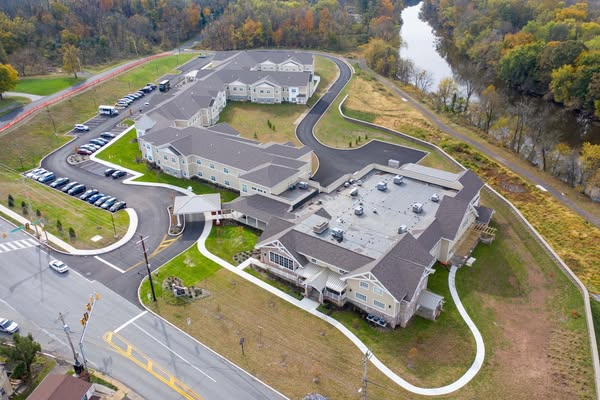
Construction services for senior living communities, churches, private education institutions, commercial, industrial, performing arts and energy sectors. HORSTCONSTRUCTION.COM Horst Construction Learn more
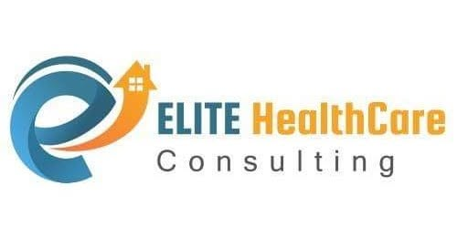
HealthCare Consulting specialized in Home Care & Group Homes Licensure and Accreditation in all 50 States, private duty, Medicaid & Medicare Certification. HOMECARECONSULTANCY.COM ELITE HealthCare Consulting Elite HealthCare Consulting – Healthcare Business Consultancy Services - Virginia Learn more
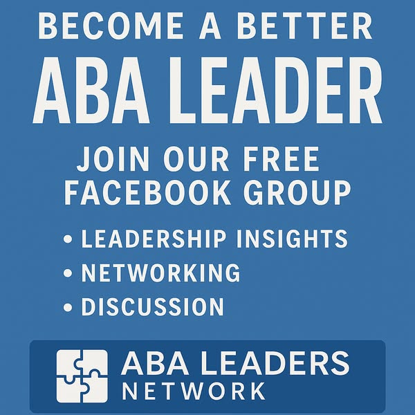
Transform your ABA practice into a thriving, efficient organization with our exclusive FREE Facebook group — ABA Leaders Network. Every week, we share actionable insights from real ABA leaders on how to: ➡️ Streamline scheduling and utilization tracking ➡️ Prevent RBT burnout and improve staff retention ➡️ Strengthen documentation and compliance systems ➡️ Build a team culture that lasts Join ABA Leaders Network today and connect with hundreds of practice owners, BCBAs, and directors who are leading the next generation of ABA. 👉 Join for FREE — and take control of your practice before it contr
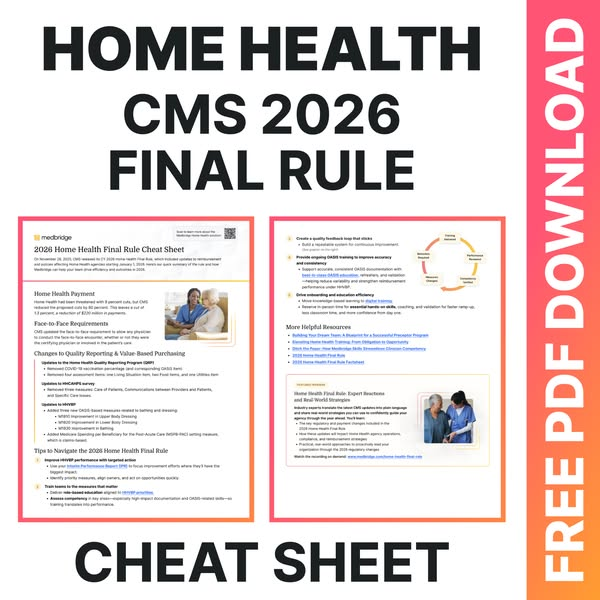
MedbridgeProven winner215d runningHome health 2026 Home Health CMS Updates Cheat Sheet Quick guide to reimbursements and updates affecting Home Health in 2026 MEDBRIDGE.COM CMS 2026 Home Health Cheat Sheet On November 28, 2025, CMS released its CY 2026 Home Health Final Rule, which included updates to reimbursement and policies affecting Home Health agencies starting January 1, 2026. Here’s our quick summary of the rule and how Medbridge can help your team drive efficiency and outcomes in 2026. Download
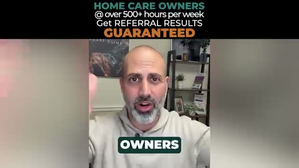
Here’s the truth most home care owners that are seeking referral consistency in their agency eventually discover: 👇 Working harder doesn’t scale a home care business. Systems do. 💯 The agencies that grow from $1M to $5M to $20M+ don’t rely on random marketing activity. They operate with a structured referral growth system. A system that: ✅ Targets the right referral partners ✅ Uses proven messaging that resonates with the audience ✅ Tracks the few KPIs that actually drive clients ✅ And creates accountability inside the sales process Without that structure, growth becomes unpredictable. Some mo
What it says out loud · 84s
Home care owners, I'm sure you've heard this, home care demand is rising. Yet there's many agencies that stay stuck at a revenue ceiling. It's almost like a revenue roller coaster. Revenue goes up, you hit a ceiling, and then you drop back down. It's not because of competition, although it feels like that's what the problem is. It's not because people can't afford care, even though every social worker and their mother are leading you to believe that's what the problem is. The real problem is because there is no repeatable referral system in your business driving growth, or because the sales system that you have now just lacks strategy and tactics that are actually working. Most owners throw effort at the wall hoping that something's going to stick. See, what we do is we replace that with a proven system that includes timeless strategies, proven tactics, and the best part is that we've been doing this long enough that we can guarantee you a return on investment or a work for free. We'll install the full sales framework, we'll implement the KPI formula that actually predicts results, and we will systematize sales management so growth doesn't depend just on you. Now, this is the same blueprint that's helped agencies move past the $1 million, $5 million, even $20 million plus in revenue with lots and lots and lots of documented results that we can share. Clear strategy, clear metrics, clear accountability. If you're ready for predictable referral growth, schedule a strategy call with us, click the button or click the learn more button, complete that quick questionnaire, and then let's jump on a call.
Watch the ad (2 videos)
Video 1 of 2 · 84s
Home care owners, I'm sure you've heard this, home care demand is rising. Yet there's many agencies that stay stuck at a revenue ceiling. It's almost like a revenue roller coaster. Revenue goes up, you hit a ceiling, and then you drop back down. It's not because of competition, although it feels like that's what the problem is. It's not because people can't afford care, even though every social worker and their mother are leading you to believe that's what the problem is. The real problem is because there is no repeatable referral system in your business driving growth, or because the sales system that you have now just lacks strategy and tactics that are actually working. Most owners throw effort at the wall hoping that something's going to stick. See, what we do is we replace that with a proven system that includes timeless strategies, proven tactics, and the best part is that we've been doing this long enough that we can guarantee you a return on investment or a work for free. We'll install the full sales framework, we'll implement the KPI formula that actually predicts results, and we will systematize sales management so growth doesn't depend just on you. Now, this is the same blueprint that's helped agencies move past the $1 million, $5 million, even $20 million plus in revenue with lots and lots and lots of documented results that we can share. Clear strategy, clear metrics, clear accountability. If you're ready for predictable referral growth, schedule a strategy call with us, click the button or click the learn more button, complete that quick questionnaire, and then let's jump on a call.
Video 2 of 2 · 84s
Home care owners, I'm sure you've heard this, home care demand is rising. Yet there's many agencies that stay stuck at a revenue ceiling. It's almost like a revenue roller coaster. Revenue goes up, you hit a ceiling, and then you drop back down. It's not because of competition, although it feels like that's what the problem is. It's not because people can't afford care, even though every social worker and their mother are leading you to believe that's what the problem is. The real problem is because there is no repeatable referral system in your business driving growth, or because the sales system that you have now just lacks strategy and tactics that are actually working. Most owners throw effort at the wall hoping that something's going to stick. See, what we do is we replace that with a proven system that includes timeless strategies, proven tactics, and the best part is that we've been doing this long enough that we can guarantee you a return on investment or a work for free. We'll install the full sales framework, we'll implement the KPI formula that actually predicts results, and we will systematize sales management so growth doesn't depend just on you. Now, this is the same blueprint that's helped agencies move past the $1 million, $5 million, even $20 million plus in revenue with lots and lots and lots of documented results that we can share. Clear strategy, clear metrics, clear accountability. If you're ready for predictable referral growth, schedule a strategy call with us, click the button or click the learn more button, complete that quick questionnaire, and then let's jump on a call.
AxisCareProven winner166d running3 versionsHome care Save hours every week by consolidating your home care tools into one seamless platform. AxisCare Makes Hard Days Easier Learn More
AxisCareProven winner166d running3 versionsHome care AxisCare is an award-winning software. Scale your agency with ease using our #1-rated platform. #1-Rated Home Care Software Learn More
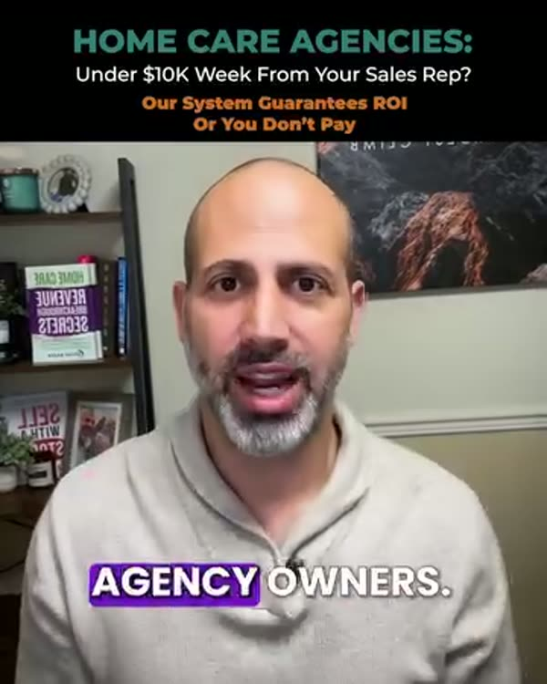
Your home care sales rep should be producing $10K/week—or more. If they aren’t, it’s not just frustrating… it’s expensive. That’s where our system comes in. The Rapid Referral Sales System gives your team a step-by-step blueprint to consistently land high-value referrals—without guesswork or gimmicks. We’ll train your rep, install the KPIs, and walk you through the same process top-performing agencies use to generate revenue every week. And we back it with this promise: if you don’t get a return, we work with you for FREE until you do. 📈 Proven in the field 📋 No more “what are you working on t
What it says out loud · 120s
Hey there, home care agency owners. Why is it that some agencies consistently land their ideal clients while many are still stuck dealing with inconsistent referrals and slow growth and then hitting their revenue ceiling again and again? Trust me, I've been there. I was doing everything when I had my business. I was networking. I was doing code calls to all the facilities in town. I ran health fairs and paid internet leads and running ads and hiring sales reps but it never actually led to predictable growth. It didn't happen for me until I finally installed an actual sales system inside of my home care business. That's when my company scaled and we quadrupled profits in just one year. Now I can tell you the key to consistent high value referrals is not random drop-ins and networking events that yield little to no results. It's not hiring a salesperson and then hoping that they're magically going to bring in all these clients or posting online and paying for internet leads and then getting frustrated when the results are lackluster at best or just sitting back hoping that organic growth is going to get you there and that your your clients are going to refer enough people and then blaming the lack of results on too much competition. The truth is most home care owners don't actually have a real system in place. They don't, right? They are throwing a whole bunch of stuff against the wall and then hoping that some of it sticks. They're doing a little bit of everything, right? But not getting the lasting results. It's like up down, up down in their revenue. Are you familiar with the revenue roller coaster? I knew it all too well. That's why I built the rapid referral sales system specific for home care business owners. It's a proven step-by-step process that guarantees you at least 10 net new ideal clients from industry referral sources in the next seven months or sooner or we work with you for free until you get the result. Now, here's how it works. Step one, we install a
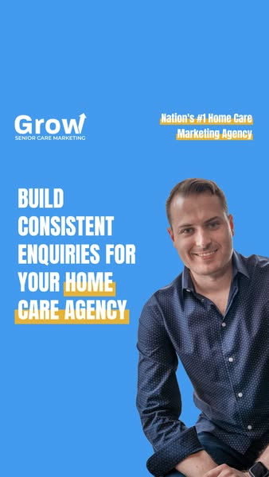
If you’re actively growing your home care agency, relying on referrals alone makes it hard to build consistent enquiries. A free strategy session helps you understand how to create a more reliable enquiry pipeline through clearer positioning and local visibility. The session includes a personalized marketing blueprint, SEO checklist, and bonus training video to guide your growth. Everything is FREE and valued at $500. 🎯 Book your FREE strategy session and get a clear plan to build more consistent enquiries. Grow Your Home Care Agency Beyond Referrals FREE Strategy Session + $500 Bonus Learn Mo

Attention Assisted Living Owners 🏥 You know how difficult it can be to secure funding for your facilities. We are the solution. Here’s the breakdown of our program: 🏠 Property Type: 1–4 Unit Residential Properties Used for Business Purposes 📊 No Minimum FICO Score (Credit score determines LTV) 💰 Loan Amounts: • Minimum: $250,000 • Maximum: $5,000,000 📈 Up to 75% Loan-to-Value (LTV) 🤝 Seller-Held Seconds Accepted 🏢 Close in the Name of Your Entity or Personal Name If you operate or are looking to acquire an assisted living property, we can help you secure the capital you need. Tap in and let’s
Silent creative: the Ad Library file has a video stream and no audio track, so the message is carried by on-screen text.
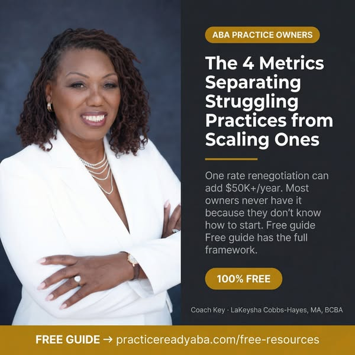
While you are busy managing daily fires, other ABA practice owners are quietly adding $50,000 to their bottom line with a single rate renegotiation conversation. They are identifying the exact payer mix that maximizes profit. They are fixing the utilization leaks that are quietly draining their cash reserves. They are not working harder than you. They are just looking at different numbers. I put together a free guide detailing the 4 metrics that actually dictate a practice's financial health, complete with industry benchmarks and the exact formulas to calculate them. Download it free at the li
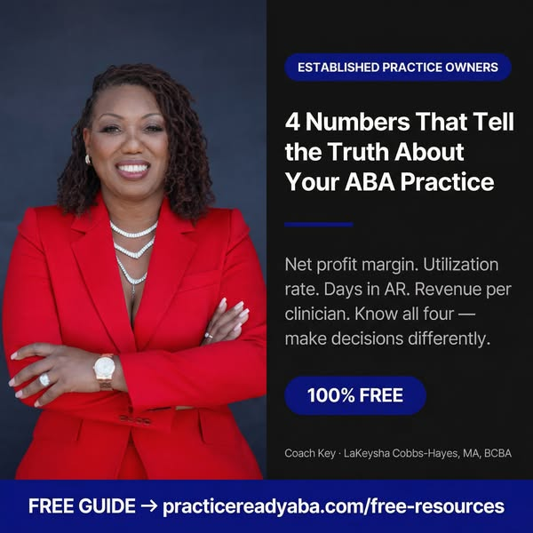
Your schedule is full. Your team is growing. Revenue is coming in. So why does the bank account not match the activity? There are 4 numbers that tell the truth about what is actually happening in your practice: net profit margin, utilization rate, Days in AR, and revenue per clinician. Most practice owners know their revenue number. Almost none know all four. The ones who know all four make decisions differently. They negotiate rates differently. They hire differently. They build differently. I put together a free guide with the benchmarks, the formulas, and the action steps. Download it free
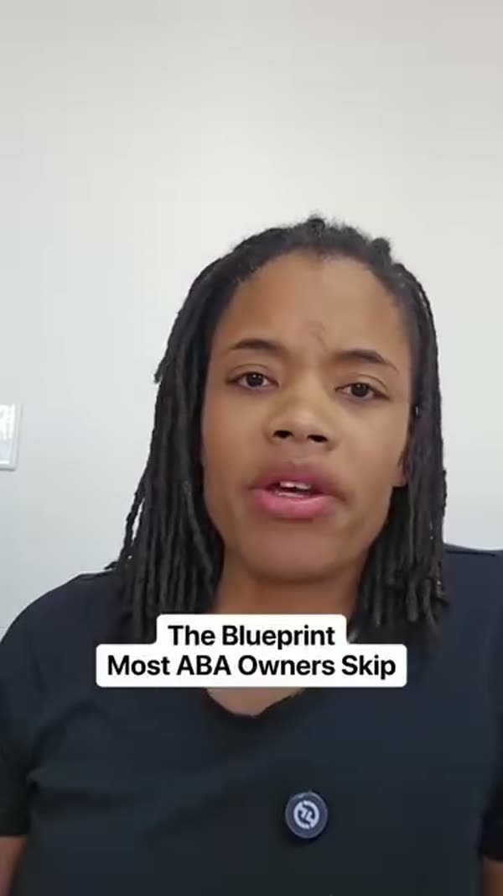
Opening an ABA clinic without a plan isn't brave. It's expensive. Most clinic owners spend their first year in reaction mode — chasing cash flow, drowning in hiring mistakes, and wondering why referrals aren't coming in. Not because they're bad at business. Because they started building before they had a foundation. The ABA Start-Up Blueprint changes that. Before you open your doors, you need four things locked in: your numbers, your schedule, your team, and your outreach plan. Get those right first and everything else becomes a whole lot clearer. It's free. It's built specifically for ABA cli
What it says out loud · 37s
Most ABA owners open their doors, then try to figure it out. That's expensive. When one pillar is weak, cash flow gets stressful, your schedule owns you, hiring feels chaotic, and referrals feel inconsistent. Structure prevents survival mode. The ABA Startup Blueprint helps you clarify your numbers, design your weekly build time, define your dream team, and create an outreach plan before launch. It turns scattered ideas into a clear plan. If you're building an ABA clinic or planning to, start with structure. Download the ABA Startup Blueprint links in the bio.
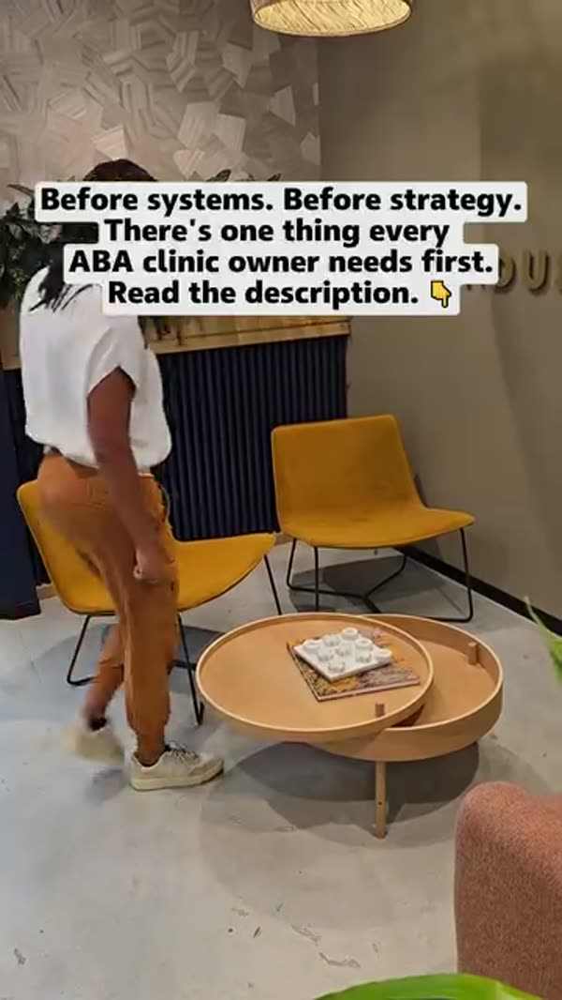
Most business advice jumps straight to tactics. Get credentialed. Hire staff. Build your caseload. But there's a step that comes before all of it — one that most BCBAs skip without realizing it. Your Leadership Foundation. Because there's a big difference between being a great clinician and being a great clinic owner. And making that identity shift early changes everything about how you build. Before the strategy comes the foundation — your vision, your values, and an honest look at what might be holding you back from fully stepping into the role. The ABA Start-Up Blueprint starts here, before
Silent creative: the Ad Library file has a video stream and no audio track, so the message is carried by on-screen text.
Paul & Joan | Home Care Business Coaches Thinking about starting a home care agency? Already own one but feeling stuck? We've been exactly where you are. Started our first agency with just a $12K credit card cash advance and zero formal business training. Over 20+ years, we built multiple successful agencies, hired thousands of caregivers, and served thousands of clients. Now we're teaching you the exact blueprint we used. ✅ Licensing & Compliance (done right from day one) ✅ Systems & Operations (that actually work) ✅ Hiring & Team Leadership (build your dream team) ✅ CEO Mindset (think like a
What it says out loud · 50s · spoken yo, re-transcribed with the multilingual model
Nihu-kisadu-wetumau. Yorbaiz-liza-o-rhe-i-in-your-seku. Tell your friends. Tell your family. Tell your church. Tell your neighbor. Something like, I help seniors stay where they feel supported. The way they want to age in place. I'm currently taking my first clients. We've seen this simple message lead to first clients all the time. You may also want to reach out to your local hospital. And talk to the social workers there. Introduce yourself. Let them know you are starting small. You are flexible. And you are focused on quality. Case managers are always looking for reliable agencies that actually follow through. Especially with patrain and add to staff cases. So be ready to run off your sleeves and take the first one that they give you.
Watch the ad (1 video)
Real estate agents who specialize in seniors and downsizers — this is for you. If you’re already earning $100K+ GCI but still working 60+ hours a week to hold everything together, it’s because you’re running a 2015 business in a 2025 senior market. And agents with better systems are winning the most motivated downsizing sellers before you ever get a chance. Here’s our offer: Give us 16 weeks, and we’ll turn your SRES business into a predictable, authority-driven machine that runs in 30 hours a week or less — or you don’t pay. This is the same system we’ve used to help senior-focused agents: Bu
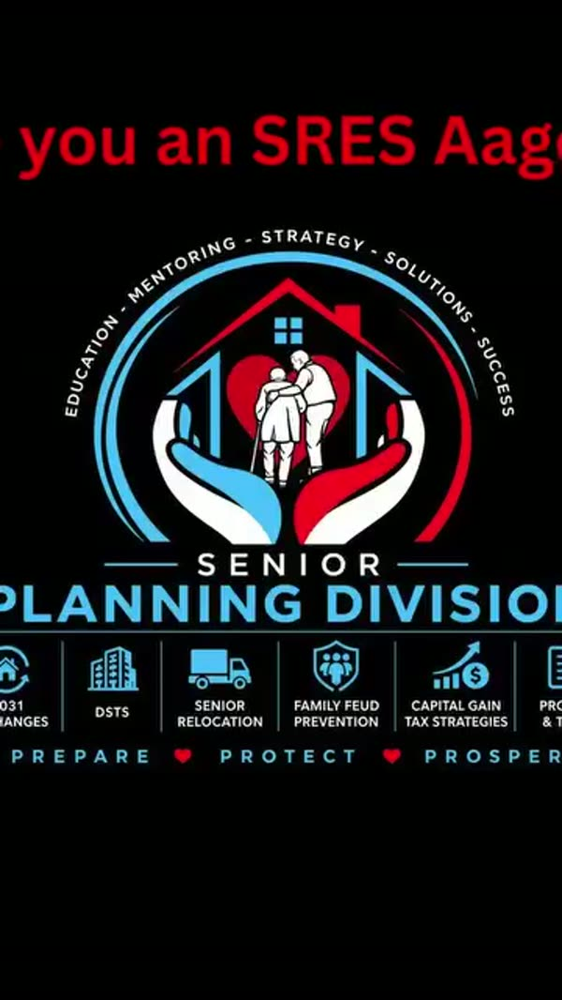
Are you a realtor or loan officer and you want to specialize helping seniors and their families? Maybe you have your SRES designation and thinking now what? Come take a look at our senior Planning Division and learn how to help seniors and their families on a high level!! Certifications and training : Senior Relocation and Transition Specialist Trust Sales Specialists Probate sales specialists 1031 Exchanges DST's Capital Gain Tax Strategist Family Fued Prevention & Legacy Planning Real Estate Planning Coaching and Mentoring on how to build the pillars to have a thriving businesses. Marketing
Silent creative: the Ad Library file has a video stream and no audio track, so the message is carried by on-screen text.
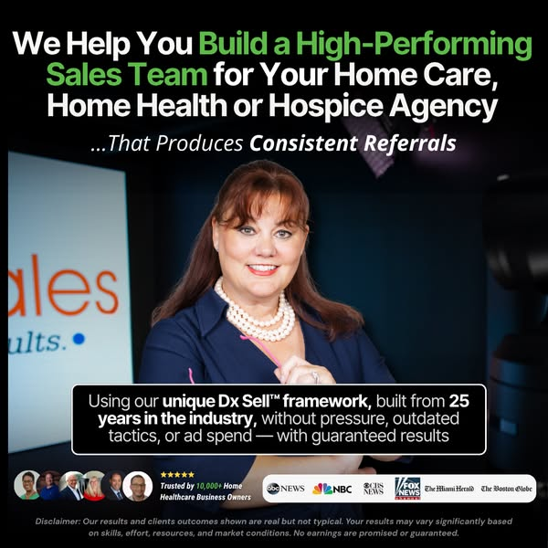
Home Care SalesProven winner107d runningHome care · Home health · Hospice · Multi-location medical If you own a non-medical home care, home health, or hospice agency and are tired of inconsistent referrals, underperforming reps, or feeling like your agency is invisible no matter how good your care is, this is for you. Most agencies don’t struggle because their care isn’t good enough. They struggle because generic sales methods don’t work in home healthcare. You can’t treat referral partners like leads. You can’t train reps with scripts that weren’t built for clinicians. And you can’t scale census, revenue, or profit without a sales system designed for how referrals actually work in home car
📍 IN HOME SENIOR CARE AGENCIES Finding qualified senior care inquiries consistently can feel unpredictable and expensive. We help in-home senior care agencies generate more qualified leads from families actively searching for care services in your area. ✅ 5+ qualified leads in 7 days ✅ Pay per lead only ✅ No ad spend required ✅ No setup fees ✅ High-intent inquiries from local families ✅ More consultations and booked assessments 💙 More qualified leads. More families helped. More growth for your agency. 👉 See if your agency qualifies today. 👉 See if your senior care home qualifies and start gett
[video]Follow 👉 @zachpevnickpt 👈 for tips and strategies to reach financial freedom through home health Physical therapists - if you want to build real income in home health WITHOUT adding more patients or drive time… …this is for you I left outpatient in 2013 making $16.53 a patient seeing 20 people a day... After 3 years I took a leap of faith and jumped 100% into home health I made over $100K my first year… …but I hit a wall fast Every dollar I made required me to get in my car and drive to another patient My schedule was full and my income had a ceiling I couldn’t break through… …no matter how ef
What it says out loud · 79s
Physical therapists in home health, listen up. If you want to build real income without adding more patients or drive time, this is for you. Follow my page where I show home health therapists how to grow their income, build a business beyond their solo schedule, and earn financial freedom without grinding themselves into the ground. I know what it feels like to be good at home health and still feel completely stuck. I left outpatient in 2013 after making $16.53 a patient, seeing 20 patients a day. I got into home health, figured it out mostly on my own, and made over $100,000 my first year. But I hit a wall fast. Every dollar I made required me to get in my car and drive to another patient. My schedule was full and my income had a ceiling I couldn't break through, no matter how efficient I got. So I built a system that changed that. That system turned into a home health therapy company that has now collected over $13 million, contracted over 300 home health agencies, and hired over 650 therapists. And I've spent the last several years teaching other home health PTs how to do the same. Like Kyle, a home health PT working for multiple staffing companies and only had gotten one contract himself. Within just 90 days, he had hired multiple therapists, was making over $20,000 a month, and even had a single week where he contracted three agencies. So follow my page and scroll through the content to see how you can start building towards financial freedom in home health.
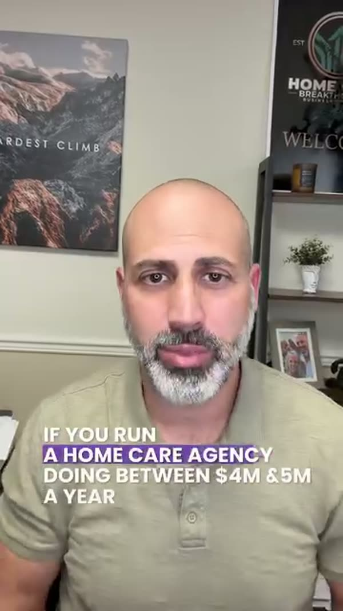
Home care agency owners doing $1M to $3M+ in annual revenue often hit the same frustrating wall. Demand for care keeps growing… but staffing shortages slow everything down. You hesitate to accept new clients. Referrals pile up. Overtime is high. On-call and call-offs become stressful. Growth stalls even though the market is there. Most agencies assume the problem is recruiting harder. The real issue is the lack of a predictable recruiting & retention system that consistently brings caregivers into the pipeline. That’s why I created the Home Care Revenue Breakthrough Webinar, where I walk agenc
What it says out loud · 66s
If you run a home care agency doing between four and five million a year, you've probably experienced this. A hospital or a former partner sends you a couple new clients. You won't accept the case, but you don't have enough caregivers to staff it. So you delay or you turn the case away. Not because demand's not there, but because caregiver recruiting and retention, it's not predictable enough. It's one of the biggest reasons home care agencies stall at the four to five million dollar revenue level. The growth opportunity exists, but the infrastructure underneath to support it doesn't. Hi, I'm Greg Mazza. After building my agency and overcoming these same challenges, I discovered the systems successful agencies use to recruit caregivers and retain caregivers consistently to support growth. Inside my home care revenue breakthrough webinar, I'll show you how agencies doing five, ten million dollars plus a year are installing recruiting, referral, and leadership systems that support scaling to that level. Now, if staffing shortages have been slowing your agency's growth down, this training is going to show you what you need to change. Save your free seat now. Look forward to seeing you on the session. Talk soon. Bye-bye.
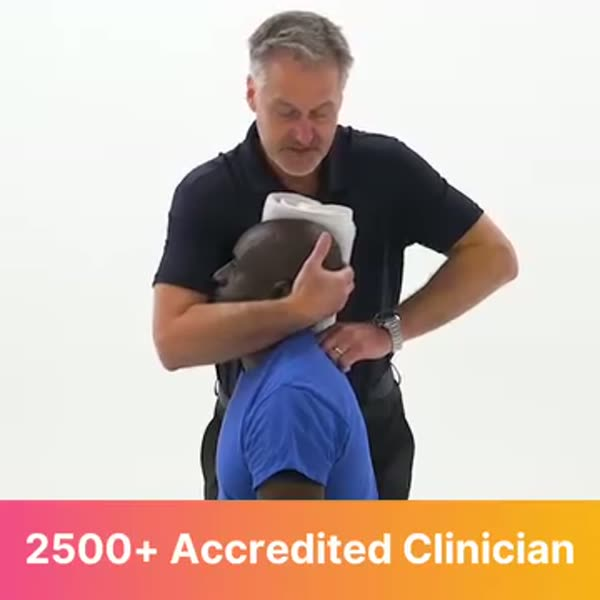
MedbridgeProven winner103d runningHome health · Multi-location medical Clinician Continued Education, Home Exercise Program Builder, Compliance Training, RTM, and More. Designed For: -Private Practice -Home Health Agencies -Hospital Rehab -Athletic Departments
What it says out loud · 22s
2,500-plus accredited clinician, continued education courses for over 15 disciplines. Customizable Patient Home Exercise Program, delivered via print, online, or in-app. Stay in compliance with over 150-plus courses on HIPAA, bloodborne pathogens, and more. Small and large orgs, sign up today.

Home care owners—are you paying a salesperson who's not even bringing in $10K a week? If you're like most agency owners, you’ve either hired a rep full of excitement, but they’re struggling… or you’re stuck hoping this is the month they finally deliver. But hope isn't a strategy. That’s why we install a proven referral sales system inside your agency—a system designed to help your sales rep consistently generate real revenue from top-tier referral sources. ✅ Predictable weekly referrals ✅ KPI-driven activity tracking ✅ Real accountability ✅ GUARANTEED ROI—or we work with you free until you get
What it says out loud · 120s
Hey there, home care agency owners. Why is it that some agencies consistently land their ideal clients while many are still stuck dealing with inconsistent referrals and slow growth and then hitting their revenue ceiling again and again? Trust me, I've been there. I was doing everything when I had my business. I was networking. I was doing code calls to all the facilities in town. I ran health fairs and paid internet leads and running ads and hiring sales reps but it never actually led to predictable growth. It didn't happen for me until I finally installed an actual sales system inside of my home care business. That's when my company scaled and we quadrupled profits in just one year. Now I can tell you the key to consistent high value referrals is not random drop-ins and networking events that yield little to no results. It's not hiring a salesperson and then hoping that they're magically going to bring in all these clients or posting online and paying for internet leads and then getting frustrated when the results are lackluster at best or just sitting back hoping that organic growth is going to get you there and that your your clients are going to refer enough people and then blaming the lack of results on too much competition. The truth is most home care owners don't actually have a real system in place. They don't, right? They are throwing a whole bunch of stuff against the wall and then hoping that some of it sticks. They're doing a little bit of everything, right? But not getting the lasting results. It's like up down, up down in their revenue. Are you familiar with the revenue roller coaster? I knew it all too well. That's why I built the rapid referral sales system specific for home care business owners. It's a proven step-by-step process that guarantees you at least 10 net new ideal clients from industry referral sources in the next seven months or sooner or we work with you for free until you get the result. Now, here's how it works. Step one, we install a
Watch the ad (1 video)

AccushieldProven winner103d runningSenior living / CCRC / SNF Grow your business with senior living communities as a verified, trusted care provider. Join thousands of providers and communities in the Accushield Verified Alliance and open doors to stronger senior living partnerships. ACCUSHIELD.COM Verified Partners Grow Faster in Senior Living Unifying senior living operators and third-party care providers for the highest standard of resident safety and care. Join the Accushield Verified Alliance to enhance resident care, uphold security standards, and build trusted partnerships within senior living.
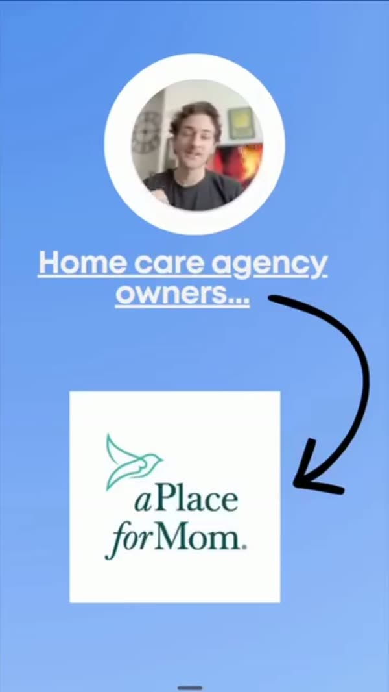
✅ 30 days. 85+ leads. $4,000+ in ad spend. This is what predictable lead flow looks like when you're not guessing. Our in-house SDR team calls and qualifies every lead before they hit your calendar. You show up, sign the paperwork, and get a new client. No shared leads. No "maybe this will work." Just clients who are ready to start care.
What it says out loud · 92s
Home care agency owners if you recognize this logo below or you've worked with other services similar to a place for mom Here's why you're not getting the results that you should be getting and why you only deal with leads who never answer and when they do They either don't want to start service. They're looking for the cheapest care possible They might be out of your service area and they have no idea who you are So what actually happens when one of these leads comes from a shared lead service like a place for mom someone looking for care visits The website and they fill out a form that doesn't have any of your branding or your qualifications and that immediately becomes a lead That lead is sent to five different home care agencies in the same exact service area that you service So at the end of the day, they've spoken to five different agencies that all offer the same exact thing And they only make a decision based on who is the cheapest Here's what we do differently so you don't run into this problem over and over again. We aren't a lead vendor We don't sell shared inquiries and you don't even have to call the lead yourself We set up ads and we run them under your page and under your brand We get lead costs that look like this $32 and we put them into appointments like this and yes I know you've heard about the 900% decrease in contact rate if you don't reach out immediately That's why we have an in-house sales team and that calls the leads for you and make sure the lead is within your service area They're aligned within your pay rates They meet your minimum hours and they're actually ready to start care now or within the next couple weeks If they don't meet those filters, then they don't get booked That means you and your scheduler only see booked assessments that have already spoken to our sales team and your caregivers schedules stay full
The highest reviewed, most trusted Home Care support. CLEARDESK.COM HIPAA trained. Wellsky, too. Top 1% remote home care back-office staff: schedulers, recruiters, intake, billing. HIPAA-trained, WellSky-fluent, placed in ~15 days. 300+ US agencies. 4.8★ Trustpilot.
Home care owners $1M+/yr: what would 83 extra clients do to your valuation? Right now, there are agencies in your state quietly adding $150k, $300k, even $1M+ in new client revenue every quarter… with the same caregivers, same city, same referral sources as you. The difference? They’re not hoping referrals show up. They’re running a plug-and-play client getting system that feeds them fresh, qualified, exclusive leads every week. Example: Araceli used this system to add 83 clients in 8 months, over $7.5M in client revenue, and has added $100k+/month from it alone. Patrick came on 14 days ago. I
Home care owners doing $1M+/yr: Araceli added 19 clients last week with 1 simple ad campaign. Right now, there are agencies in your state quietly adding $150k, $300k, even $1M+ in new client revenue every quarter… with the same caregivers, same city, same referral sources as you. The difference? They’re not hoping referrals show up. They’re running a plug-and-play client getting system that feeds them fresh, qualified, exclusive leads every week. Example: Araceli used this system to add 83 clients in 8 months, over $7.5M in client revenue, and has added $100k+/month from it alone. Patrick came
What it says out loud · 32s
Home care owners one million plus a year. RSL-E added 19 clients last week without referral partners. This is RSL-E from Loving Care. Today is May 19, 2026. Last week we got 19 new clients with Home Care Grow. I am so thankful for them. Thank you so much for all you do. These 19 clients will bring in a projected $1.5 million for her over the next six years. So if you've been stuck at the same revenue and want a guaranteed way to smash through it, tap learn more to check if your city is still open and book your agency growth goal.
Home care owners $1M+/yr: Same caregivers. Same market. Extra $150k in 16 weeks from one system. Right now, there are agencies in your state quietly adding $150k, $300k, even $1M+ in new client revenue every quarter… with the same caregivers, same city, same referral sources as you. The difference? They’re not hoping referrals show up. They’re running a plug-and-play client getting system that feeds them fresh, qualified, exclusive leads every week. Example: Araceli used this system to add 83 clients in 8 months, over $7.5M in client revenue, and has added $100k+/month from it alone. Patrick c
What it says out loud · 45s
Home care owners one million plus a year. Same caregivers, same market, extra 150K in 16 weeks from one system. This is Araceli from Loving Care. Today is May 19, 2026. Last week, we got 19 new clients with home care grow. I am so thankful for them. Thank you so much for all you do. These 19 clients will bring in a projected $1.5 million for her over the next six years. So if you've been stuck at the same revenue and want a guaranteed way to smash through it, click I'm ready to grow my agency and see if you qualify to book your agency growth call with me below. We'll meet, learn about your agency and see if we can help you grow it. We now only bring on three new home care agencies per week to ensure every agency hits the 150K goal from the leads generated in the first 16 weeks.
Home care owners $1M+/yr: Araceli added 19 clients last week without a single new referral partner. Right now, there are agencies in your state quietly adding $150k, $300k, even $1M+ in new client revenue every quarter… with the same caregivers, same city, same referral sources as you. The difference? They’re not hoping referrals show up. They’re running a plug-and-play client getting system that feeds them fresh, qualified, exclusive leads every week. Example: Araceli used this system to add 83 clients in 8 months, over $7.5M in client revenue, and has added $100k+/month from it alone. Patric
Home care owners $1M+/yr: 83 new clients in 8 months… while her competitors waited on referrals. Right now, there are agencies in your state quietly adding $150k, $300k, even $1M+ in new client revenue every quarter… with the same caregivers, same city, same referral sources as you. The difference? They’re not hoping referrals show up. They’re running a plug-and-play client getting system that feeds them fresh, qualified, exclusive leads every week. Example: Araceli used this system to add 83 clients in 8 months, over $7.5M in client revenue, and has added $100k+/month from it alone. Patrick c
Home care owners $1M+/yr: Referrals stalled? Araceli added $1.5M in projected revenue from one week of clients. Right now, there are agencies in your state quietly adding $150k, $300k, even $1M+ in new client revenue every quarter… with the same caregivers, same city, same referral sources as you. The difference? They’re not hoping referrals show up. They’re running a plug-and-play client getting system that feeds them fresh, qualified, exclusive leads every week. Example: Araceli used this system to add 83 clients in 8 months, over $7.5M in client revenue, and has added $100k+/month from it a

AxisCareProven winner79d running3 versionsHome care AxisCare has done the hard work for you. Stay compliant with Ohio’s EVV requirements using AxisCare’s trusted home care software. Get a demo. Ohio EVV Simplified—Schedule Demo Learn More

AxisCareProven winner79d running3 versionsHome care Say goodbye to manual EVV processes and all the paperwork that comes with it. AxisCare's trusted solution simplifies all home care EVV processes in Ohio. Get a demo. Compliant, Simplified Ohio EVV Solution Learn More
MedbridgeProven winner79d running3 versionsHospice Free Webinar - Hospice HOPE Tool Explained In this recorded webinar, Jennifer Kennedy, VP for Quality and Standards at Community Health Accreditation Partner (CHAP), will discuss the new regulatory changes coming with the HOPE assessment tool and how it will contribute to the patient’s plan of care. MEDBRIDGE.COM Free Webinar! Download Now A big change is coming for hospice providers. On October 1, 2025, the new patient assessment tool from CMS, Hospice Outcomes and Patient Evaluation, or “HOPE,” will go into effect. This new tool utilizes assessment-based quality data to enhance the Hospice Q
Treasured Hearts offers a franchise model grounded in hands-on clinical expertise, thoughtful hiring standards, and long-term care relationships. Designed for owners who want to build a respected business in ABA services, the brand provides established processes, leadership support, and a clear model focused on quality service delivery.
What it says out loud · 31s
Oh, there'll be treasure here. Sorry, Captain. That's the wrong type of treasure. At Treasured Hearts ABA, the real treasures are the children we serve. That's why we focus on quality service above profits using our unique multi-layer approach that attracts, trains, and retains the best talent in the industry. The results, highly refined services for the children and families whom we serve, and steady business growth. Are you ready to build your ABA business? Go to abacentric.com or click the link below.

Read this if you run an assisted living facility with apartments sitting empty. We help assisted living communities build waitlists of qualified families using a proven digital system. 50+ facilities trust us with their growth. Tap "Learn More" to see how 👇 GO.WISDOMFIRSTMARKETING.COM Need more booked tours? Take 30-sec quiz Learn more
MID-TO-LARGE MEDICAID HOME CARE AGENCIES: You're paying for leads that never pick up. You pay only when a qualified caller is warm-transferred. We screen enrollment, service area, and intent before handoff. One Michigan agency closed 28 enrollments in 30 days. No contracts and no leads shared with competing agencies. Book a discovery call. → GO.ADULTCARENETWORK.COM Three Live Qualifications Before You Pay Adult Care Network Learn more
Nomia HQProven winner72d running3 versionsHome care Still running your home care agency on spreadsheets, paper, or multiple tools? That’s where time and billable hours get lost. NomiaHQ puts scheduling, caregiver tracking, compliance, and billing in one place. Book a free demo and see how it works. NOMIAHQ.COM Stop Losing Billable Hours Built for growing US home care agencies Contact Us
If your referrals are inconsistent, you don't need to visit more facilities. You need to fix your system. Most home care owners we talk to are putting in real effort — outreach, follow-ups, facility visits — and still watching their census go up and down like a rollercoaster. The problem isn't how hard you're working. It's that there are silent gaps in your referral structure you may not even know exist. We created a free guide that walks you through the 7 most common referral breakdowns costing home care agencies clients right now — and exactly how to fix each one. 👉 Download The 7 Referral B
What it says out loud · 59s
We used to know a home-clear agency owner who was working really hard. In fact, 60 hours a week seemed normal to her, visiting every facility she could find and still couldn't figure out why her phone wasn't ringing. She wasn't lazy, she wasn't inexperienced. She just had holes in her referral system she couldn't see. And those invisible holes were quietly costing her clients every single month. We put together a free guide that diagnoses exactly where that breakdown happens. It's called Seven Referrer Breakdowns Costing Your Home Care Agency Clients. Seven specific gaps, seven quick fixes, plus a referral stability score so you know which ones to tackle first. After two decades running our own award-winning agency, we've lived every one of these and helped owners across the country fix them. It's completely free. Click the link below and download it right now. Your referrals shouldn't be random. Let us help you make them reliable.
Watch the ad (1 video)
Home care agency owners — if you've tried ads before and got nothing but clicks and form fills from people who never answered the phone, this isn't that. The problem wasn't that ads don't work for home care. The problem was the agency running them didn't understand home care. They sent you volume. We send you families. Every inquiry we generate is pre-screened before it reaches you — qualified for your zip code, your hourly rates, and your availability. We call them. We qualify them. We book them directly to your calendar. You don't chase leads. You show up to assessments. We only work in priv
What it says out loud · 35s
If you're buying leads from agencies like A Place for Mom, you're not the only home care agency calling that family. That same lead is sold to four others in your county. You're racing on phone call speed, and the family books with whoever answers first. We replace that with a recommendation system. Exclusive private pay families, pre-qualified by your zip and your hourly rates, booked directly to your calendar, three to five every month, guaranteed in 90 days, or we work for free. We only work with one agency per county. Take the free 60-second assessment, seven questions, no email required, and find out if your county is still available and whether your agency qualifies.
Watch the ad (1 video)
You’ve seen the client interviews. Real home care owners, real numbers, real booked assessments.Here’s the part most agencies miss: every month you wait, those private-pay families are booking with the agency down the road instead of you.We run the ads under your own brand, our team calls and qualifies every family, and we book the in-homeassessment straight onto your calendar. You just show up and match a caregiver.No shared leads. No retainers. No “marketing” you have to babysit.Add $150K in new revenue in 90 days, or you don’t pay. That’s the whole deal.
What it says out loud · 18s
I remember my first client that I had received, my ad was present, I think a little less than two hours, which was very phenomenal.

Assisted Living Locators franchisees help families make assisted care decisions confidently. If you have a desire to help seniors and become a trusted resource in your community while having a flexible schedule, learn more about franchise ownership with Assisted Living Locators.
Stop Trying to Build Your Assisted Living Business Alone! The people who can save you years of costly mistakes are already in this room. The biggest mistake aspiring and existing ALF owners make isn't a lack of passion. It's trying to build alone. If you've been called to open, grow, or scale an Assisted Living Facility or Group Home, you don't need more guesswork, you need the right mentors, the right relationships, and the right room. At ALFCaregiverCon 2027, you'll be surrounded by the people who have already built successful businesses and are willing to share what works. Meet and connect
What it says out loud · 49s
What brought me here today was Carlene. She's an amazing consultant and we worked with her for many years and she's always referred to as many different clients. And my experience was really amazing. I've got to meet so many people, learn about different avenues of business that I didn't even know were important and super prevalent in this area. So I feel like I've gained a lot of knowledge. So for someone who is going into assisted living, I would say just meet with someone, connect with someone, definitely look for maybe a consultant or somebody who already has their own business because there is so much knowledge out there that you wouldn't even think to ever discover on your own. So definitely looking for a mentor or someone who can help guide you.
Follow @zachpevnickpt if you're ready to build a home health therapy business that works when you don’t!
What it says out loud · 39s
I'm capped at eight patients a day. I have 20 therapists doing 100 visits a day. I make a hundred to $250,000 a year, depending on my location and negotiation skills. I make over $300,000 without driving patient to patient throughout the day. When I go on vacation, I don't make any money. When I went on vacation, my therapist saw 300 patients and I received this check for $69,000. I negotiate my rate with one agency and I hope they don't drop me. I have contracts with 12 home health agencies. If one drops me, I barely notice. I do my own notes and documentation. My therapist do the notes. I review the numbers. Follow my account if you wanna go from trading hours for dollars to building a home health therapy business that works when you don't.
What if this was the year you actually opened it? Not just thought about it. Not just researched it. Actually had the structure, the license, the placements coming in, and a group home running as a real business. People are doing this right now. Some with zero background in social services. None of them had a secret advantage. They just found someone who laid out the path clearly the legal structure, the licensing process, how to market to placement agencies and fill beds consistently. That's the part most people never get. They have the heart for the work. They don't have the system
What it says out loud · 71s
What if this was the year that you actually opened the Children's Residential Group Home? Not just thought about it, but you actually went through the licensing process, found you a home, got kids into your possession, and actually made a difference in your community. I'm here to tell you that people are doing this right now, and they have zero background in the social services industry. There are people that are running group homes right now that had no secret advantage. All they did was found somebody who can lay out the path for them clearly. Somebody who can show them how to market their group home, how to go through the licensing process, and ultimately how to fill beds and make income while doing it. You see, that's the part that most people never get. They have a heart for the work, but they never have a system to actually create the business. Without the system, the idea never becomes a reality, it just stays an idea. Our upcoming Group Home Mastermind Workshop cover this all in one session. We're going to show you how to set up your entity correctly, how to move through the licensing process without wasting six months on incorrect steps, and how to fill your beds and generate income without having to wait months for one single placement. And we do this all in one session, free of charge. So if you've been sitting around with this on your mind, this is the clearest next step that you can find. Just register now using the link below.
Attention ABA clinic owners: Your BCBAs do not need $600 consumer tablets to run Catalyst or CentralReach.
What it says out loud · 61s
Attention, ABA clinic owners, your BCBA's do not need $600 consumer tablets to run catalysts or central reach. Here's the truth, you're buying consumer tech for a clinical environment and it is costing you thousands. Your RBTs don't need cinema quality cameras or the newest microchips. They need two things, a battery that will actually survive an eight hour shift without dying mid session and hardware that won't shatter the second a client throws it across earth. But big tech companies market to teenagers and graphic designers, not ABA clinics. So you end up overpaying for features your staff doesn't need while sacrificing the durability you actually do. At Wholesale tablets, we supply B2B hardware. We got sick of seeing clinical directors blow their operational budgets on the wrong devices just to replace them four months later. So my team put together a completely free resource for ABA clinics called the clinic directors guide to choosing the right tablets. It takes three minutes to read, it gives you the exact minimum specs you need to run heavy softwares without crashing the devices with true all day battery life and a blueprint to stop paying retail markup forever. Click the learn more button below this video, drop your info on the page and I'll send you the guide to your inbox. Stop paying retail for therapy devices. Click the button and I'll see you on the inside.
Most ABA clinic owners are lighting their profit margins on fire by paying retail prices for their therapy tablets.
What it says out loud · 59s
Most ABA clinic owners are lighting their profit margins on fire by paying retail prices for their business. Here's the truth. You're buying consumer tech for a clinical environment and it is costing you thousands. Your RBTs don't need cinema quality cameras or the newest microchips. They need two things. A battery that will actually survive an eight hour shift without dying mid session and hardware that won't shatter the second a client throws it across her. But big tech companies market to teenagers and graphic designers, not ABA clinics. So you end up overpaying for features your staff doesn't need while sacrificing the durability you actually do. Wholesale tablets we supply B to B hardware. We got sick of seeing clinical directors blow their operational budgets on the wrong devices just to replace them in formless later. So my team put together a completely free resource for ABA clinics called the clinic director's guide to choosing the right tablets. It takes three minutes to read. It gives you the exact minimum specs you need to run heavy softwares without crashing the devices with true all day battery life and a blueprint to stop paying retail markup forever. Click the learn more button below this video, drop your info on the page and I'll send you the guide to your inbox. Stop paying retail for therapy devices. Click the button and I'll see you on the inside.
Looking for reliable caregivers? Job boards can help. But they usually reach caregivers only after they start searching. Facebook Ads work a little differently. They help your agency stay visible to local caregivers who are open to a better schedule, stronger team or more meaningful place to work. That matters when the next open shift cannot wait for perfect timing. Senior Care Marketing Max creates and manages Facebook Ads built specifically for caregiver recruitment in home care. Tap “Learn More” to see how this service can help your agency reach more caregiver applicants. GET.SENIORCAREMARK
Sometimes the best caregiver candidates are not scrolling job boards. They are between shifts. Checking in with family. Catching a few minutes on Facebook before the next part of their day. That’s where your agency can show up. We help home care agencies create Facebook Ads that introduce caregiver opportunities in a warmer, more natural way. So when someone local is open to a better role, your agency is easier to notice. Tap “Learn More” to see how Facebook Ads can support your caregiver recruitment. GET.SENIORCAREMARKETINGMAX.COM Be Seen by Caregivers Reach caregivers beyond job boards. Lear
A good caregiver does more than fill a shift. They help protect the rhythm of the whole day. Clients feel supported. Schedulers breathe easier. The team feels less stretched. But finding the right people consistently takes more than another job post. At Senior Care Marketing Max, we help home care agencies use Facebook Ads to reach local caregivers with messages built around fit, trust and meaningful work. Tap “Learn More” to see how this service can help your agency attract caregiver applicants more consistently. GET.SENIORCAREMARKETINGMAX.COM Attract More Caregivers Reach local caregivers wi
Caregiver hiring rarely feels urgent at first. It starts with small moments. An interview that doesn’t show. An open shift that stays open. A scheduler trying to cover gaps before the day even begins. And then you catch yourself thinking … “We’re always hiring, but it still doesn’t feel steady.” We help home care agencies use Facebook Ads to reach local caregiver applicants and build a more reliable hiring pipeline. Instead of waiting for caregivers to find your job post, we help put your opportunities in front of the right people where they already spend time. Learn more about how Facebook Ad
Home care owners $1M+/yr: We've helped 55 agencies in 23 states turn paid ads into new clients. Araceli added 19 new clients in 1 week (see video below) How'd she do it? We started by finding out who would pay her the most and stay the longest. For her, that was Medicaid, specifically Family Caregivers. Then built and turned on our Medicaid-specific meta ads campaign to attract them. As leads come in, we qualify them. If they’re qualified, we send them to her team. If not, we don’t. Over 16 weeks she gets roughly 900 qualified leads. Connects with 450 of them. Helps 225 get their physician let
What it says out loud · 84s
Home care owners one million plus a year. We've helped 55 agencies in 23 states turn ad spend into new starts, not shared leads. I started selling from loving care last week. We got 19 new clients with home care growth. How'd she do it? We started by finding out who would pay her the most and stay the longest, starting with private pay, looking at Medicaid, and then veterans. For her, she couldn't accept veterans. Medicaid was most profitable, specifically family caregivers. Then we built and turned on our Medicaid specific meta ads campaign to attract them. As leads come in, we qualify them. If they're qualified, we send them directly to our team. If they're not, we don't. These are her rounded numbers over a 16 week campaign. She gets about 900 qualified leads with her team responding within 60 seconds, seven days a week, 12 hours a day. About 50% get connected with via voice or text. 50% of those make it to a physician letter and actually need care and 90% get approved over a 16 week period once they make it through their pipeline. With $95,000 average lifetime value per client and 23% gross margins, she's adding about $19.3 million in projected revenue and about $4.4 million in new projected gross profit from a 16 week campaign. So if you're a home care agency doing a million a year or more and looking to attract Medicaid, veteran, or private pay clients to grow your agency, click learn more and enter your info. If you qualify, book your agency growth call with a member of my team to see if we can help you grow your agency.
Home care owners $1M+/yr: Araceli added 19 clients last week with a single new referral partner. How'd she do it? We started by finding out who would pay her the most and stay the longest. For her, that was Medicaid, specifically Family Caregivers. Then built and turned on our Medicaid-specific meta ads campaign to attract them. As leads come in, we qualify them. If they’re qualified, we send them to her team. If not, we don’t. Over 16 weeks she gets roughly 900 qualified leads. Connects with 450 of them. Helps 225 get their physician letter. Getting 200 new medicaid clients. At $95,600 lifeti
Home care owners $1M+/yr: From flat billable hours to 19 clients in a single week. Araceli added 19 new clients in 1 week (see video below) How'd she do it? We started by finding out who would pay her the most and stay the longest. For her, that was Medicaid, specifically Family Caregivers. Then built and turned on our Medicaid-specific meta ads campaign to attract them. As leads come in, we qualify them. If they’re qualified, we send them to her team. If not, we don’t. Over 16 weeks she gets roughly 900 qualified leads. Connects with 450 of them. Helps 225 get their physician letter. Getting
Home care owners $1M+/yr: Tired of A Place for Mom leads? These agencies get qualified, fresh, and exclusive leads instead. Araceli added 19 new clients in 1 week (see video below) How'd she do it? We started by finding out who would pay her the most and stay the longest. For her, that was Medicaid, specifically Family Caregivers. Then built and turned on our Medicaid-specific meta ads campaign to attract them. As leads come in, we qualify them. If they’re qualified, we send them to her team. If not, we don’t. Over 16 weeks she gets roughly 900 qualified leads. Connects with 450 of them. Helps
AxisCareScaling51d running3 versionsHome care Learn how AxisCare’s trusted EVV software helps agencies. Learn more with this free resource on the how, when, and why of EVV in home care. HTTPS://AXISCARE.COM/WHITE-PAPERS/UNDERSTANDING-EVV-2/ Georgia EVV Simplified—Schedule Demo Learn More

AxisCareScaling51d running3 versionsAssisted living / RAL · Home care Home Care agencies trust AxisCare for reliable, simplified EVV solutions in Michigan. Get a demo to see how you can enhance care quality and client trust. HTTPS://AXISCARE.COM/MICHIGAN-MEDICAID-EVV/ Compliant, Simplified Michigan EVV Solution Learn More

AxisCareScaling51d running3 versionsAssisted living / RAL · Home care Home Care agencies trust AxisCare for reliable, simplified EVV solutions in North Carolina. Get a demo to see how you can enhance care quality and client trust. HTTPS://AXISCARE.COM/NORTHCAROLINA-MEDICAID-EVV/ Compliant, Simplified North Carolina EVV Solution Learn More

AxisCareScaling51d running3 versionsAssisted living / RAL · Home care Home Care agencies trust AxisCare for reliable, simplified EVV solutions in Tennessee. Get a demo to see how you can enhance care quality and client trust. HTTPS://AXISCARE.COM/TENNESSEE-MEDICAID-EVV/ Compliant, Simplified Tennessee EVV Solution #1 EVV Solution Learn More

AxisCareScaling51d running3 versionsHome care · Assisted living / RAL Home Care agencies trust AxisCare for reliable, simplified EVV solutions in Illinois. Get a demo to see how you can enhance care quality and client trust. HTTPS://AXISCARE.COM/ILLINOIS-MEDICAID-EVV/ Compliant, Simplified Illinois EVV Solution Learn More
AxisCareScaling51d running3 versionsHome care · Assisted living / RAL Home Care agencies trust AxisCare for reliable, simplified EVV solutions in Virginia. Get a demo to see how you can enhance care quality and client trust. HTTPS://AXISCARE.COM/VIRGINIA-MEDICAID-EVV/ Compliant, Simplified Virginia EVV Solution Learn More

AxisCareScaling51d running3 versionsHome care · Assisted living / RAL Home Care agencies trust AxisCare for reliable, simplified EVV solutions in Wisconsin. Get a demo to see how you can enhance care quality and client trust. HTTPS://AXISCARE.COM/WISCONSIN-MEDICAID-EVV/ Compliant, Simplified Wisconsin EVV Solution Learn More

AxisCareScaling51d running3 versionsHome care · Assisted living / RAL Home Care agencies trust AxisCare for reliable, simplified EVV solutions in Missouri. Get a demo to see how you can enhance care quality and client trust. HTTPS://AXISCARE.COM/MISSOURI-MEDICAID-EVV/ Compliant, Simplified Missouri EVV Solution Learn More

AxisCareScaling51d running3 versionsHome care · Assisted living / RAL Home Care agencies trust AxisCare for reliable, simplified EVV solutions in Indiana. Get a demo to see how you can enhance care quality and client trust. HTTPS://AXISCARE.COM/INDIANA-MEDICAID-EVV/ Compliant, Simplified Indiana EVV Solution Learn More

AxisCareScaling51d running3 versionsHome care · Assisted living / RAL Home Care agencies trust AxisCare for reliable, simplified EVV solutions in Georgia. Get a demo to see how you can enhance care quality and client trust. HTTPS://AXISCARE.COM/GEORGIA-MEDICAID-EVV/ Compliant, Simplified Georgia EVV Solution Learn More
One stop shop for ABA practices WWW.THERAPYLAKE.COM Tired of your old ABA software? If your current ABA software feels limiting, fragmented, or outdated, it may be time for a better solution. TherapyLake replaces disconnected systems with a single platform designed to support every part of your ABA operations — from intake to reimbursement. We also offer RCM, credentialing and contracting services! See Details
LOOKING FOR: Senior & assisted living communities that want more booked tours, predictably. Tap below 👇 Need more booked tours? See if you qualify Learn More
The system behind senior living facilities with 6-month waitlists has nothing to do with luck. It's not about having the nicest building. Or the best location. Or the lowest price. It's about showing up in front of the right families at the right time with the right message. Before they visit your competitor first. We built a marketing system specifically for senior and assisted living communities. It's helped 50+ facilities go from empty beds to waitlists. Some in as little as 90 days. Families trust you before they ever walk through the door. Tours convert at a higher rate. And your sales te
For assisted living community operators: we help you get more booked tours for each of your facilities.
What it says out loud · 108s
Here's what we help assisted living facilities do. We help you build a six month wait list. We help you reach over 95% occupancy or higher, and we help you fill your tour calendar with families who are ready to make a decision. We don't want you to have tire kickers. We don't want people who are comparing 10 different communities and have no urgency. We have families who've done their research, understand what your community offers and are ready to have a real conversation. We've helped over 50 facilities get there, not with gimmicks or generic ads that attract the wrong families. We've actually built a system specifically for how people actually choose senior care. The system that we've developed, we call it trust-based marketing, and essentially it works like this. Your families are not impulse buyers. They're researching for weeks, sometimes months before they ever pick up the phone. So instead of running ads that try to rush them through that process, we built a marketing system that earns their trust at every stage of their decision. By the time a family books a tour, they've already known who you are, what makes your community different, why they want to visit, and your team isn't convincing strangers, the welcoming people who already want to be there. So our call, we're going to do a couple of things. First, we're going to figure out whether this is actually fit for your business. While it works for most, this isn't a one size fits all system. We have to adjust this slightly based on your market and your competition and things like that. And if it is a fit, we'll show you exactly what this would look like for your community or your business, your market, your families, your capacity goals. There's no pressure, no pitch, just a straight forward conversation to see if our marketing system for assisted living is a good fit for your business. Now, just make sure you confirm your call and we'll talk to you soon.
Watch the ad (1 video)
Read this if you run an assisted living facility with appartments sitting empty. We help assisted living communities build waitlists of qualified families using a proven digital system. 50+ facilities trust us with their growth. Tap "Learn More" to see how 👇 GO.WISDOMFIRSTMARKETING.COM Need more booked tours? Take 30-sec quiz
Araceli gets 225 qualified leads, 55 assessments, and 50 new clients every month with this meta ads system. How'd she do it? We started by finding out who would pay her the most and stay the longest. For her, that was Medicaid, specifically Family Caregivers. Then built and turned on our Medicaid-specific meta ads campaign to attract them. As leads come in, we qualify them. If they’re qualified, we send them to her team. If not, we don’t. Over 16 weeks she gets roughly 900 qualified leads. Connects with 450 of them. Helps 225 get their physician letter. Getting 200 new medicaid clients. At $95
Home care owners $1M+/yr: Araceli went from $2.4M/yr to $5.5M/yr in 8 months off one Meta system. Araceli added 19 new clients in 1 week (see video below) How'd she do it? We started by finding out who would pay her the most and stay the longest. For her, that was Medicaid, specifically Family Caregivers. Then built and turned on our Medicaid-specific meta ads campaign to attract them. As leads come in, we qualify them. If they’re qualified, we send them to her team. If not, we don’t. Over 16 weeks she gets roughly 900 qualified leads. Connects with 450 of them. Helps 225 get their physician l
If 4 other agencies are calling the same family, you're not competing… you're discounting. Here's the alternative. Araceli added 19 new clients in 1 week (see video below) How'd she do it? We started by finding out who would pay her the most and stay the longest. For her, that was Medicaid, specifically Family Caregivers. Then built and turned on our Medicaid-specific meta ads campaign to attract them. As leads come in, we qualify them. If they’re qualified, we send them to her team. If not, we don’t. Over 16 weeks she gets roughly 900 qualified leads. Connects with 450 of them. Helps 225 get
What if in the next 30 days you had your first 10 Medicaid authorizations from people who found YOU, not a referral partner? Araceli added 19 new clients in 1 week (see video below) How'd she do it? We started by finding out who would pay her the most and stay the longest. For her, that was Medicaid, specifically Family Caregivers. Then built and turned on our Medicaid-specific meta ads campaign to attract them. As leads come in, we qualify them. If they’re qualified, we send them to her team. If not, we don’t. Over 16 weeks she gets roughly 900 qualified leads. Connects with 450 of them. Help
Araceli adds 50 new clients every month weeks with 1 meta ads campaign. How'd she do it? We started by finding out who would pay her the most and stay the longest. For her, that was Medicaid, specifically Family Caregivers. Then built and turned on our Medicaid-specific meta ads campaign to attract them. As leads come in, we qualify them. If they’re qualified, we send them to her team. If not, we don’t. Over 16 weeks she gets roughly 900 qualified leads. Connects with 450 of them. Helps 225 get their physician letter. Getting 200 new medicaid clients. At $95,600 lifetime value each. ($1,300/mo
Home care owners $1M+/yr: what would 19 extra clients per week do to your valuation? Araceli added 19 new clients in 1 week (see video below) How'd she do it? We started by finding out who would pay her the most and stay the longest. For her, that was Medicaid, specifically Family Caregivers. Then built and turned on our Medicaid-specific meta ads campaign to attract them. As leads come in, we qualify them. If they’re qualified, we send them to her team. If not, we don’t. Over 16 weeks she gets roughly 900 qualified leads. Connects with 450 of them. Helps 225 get their physician letter. Gettin
Most "lead" companies sell the same family to 4 agencies. We partner with you, cover your ads, and you own every lead. Araceli added 19 new clients in 1 week (see video below) How'd she do it? We started by finding out who would pay her the most and stay the longest. For her, that was Medicaid, specifically Family Caregivers. Then built and turned on our Medicaid-specific meta ads campaign to attract them. As leads come in, we qualify them. If they’re qualified, we send them to her team. If not, we don’t. Over 16 weeks she gets roughly 900 qualified leads. Connects with 450 of them. Helps 225

Can you think of one senior in your life who is getting closer to needing regular care? A parent? A neighbor? A long-time family friend? 🤔 You're not alone... 10,000 people are turning 65 every day... and 4,000 people are turning 85. A large number of these seniors are going to need help with daily activities. This wave of demand for senior care is turning into a wave of demand for senior housing... and demand is already outpacing supply... creating a unique opportunity for regular men and women to get in on the industry. Not as a caregiver. Not as a nurse. As a business owner. ‼️ One single-f
Araceli adds 50 new Medicaid Family Caregivers per month using our HomeCareGrow system. How'd she do it? We started by finding out who would pay her the most and stay the longest. For her, that was Medicaid, specifically Family Caregivers. Then built and turned on our Medicaid-specific meta ads campaign to attract them. As leads come in, we qualify them. If they’re qualified, we send them to her team. If not, we don’t. Over 16 weeks she gets roughly 900 qualified leads. Connects with 450 of them. Helps 225 get their physician letter. Getting 200 new medicaid clients. At $95,600 lifetime value
Medicaid Agency $1M/yr+? Araceli adds 50 new family caregivers every single month. How'd she do it? We started by finding out who would pay her the most and stay the longest. For her, that was Medicaid, specifically Family Caregivers. Then built and turned on our Medicaid-specific meta ads campaign to attract them. As leads come in, we qualify them. If they’re qualified, we send them to her team. If not, we don’t. Over 16 weeks she gets roughly 900 qualified leads. Connects with 450 of them. Helps 225 get their physician letter. Getting 200 new medicaid clients. At $95,600 lifetime value each.
Home care owners $1M+/yr: 19 new clients in 7 days. No referral partners. Araceli added 19 new clients in 1 week (see video below) How'd she do it? We started by finding out who would pay her the most and stay the longest. For her, that was Medicaid, specifically Family Caregivers. Then built and turned on our Medicaid-specific meta ads campaign to attract them. As leads come in, we qualify them. If they’re qualified, we send them to her team. If not, we don’t. Over 16 weeks she gets roughly 900 qualified leads. Connects with 450 of them. Helps 225 get their physician letter. Getting 200 new m
Home Health agencies shouldn't have to lose referrals because of slow, manual processes. In this video, our founder shares how CareFlo AI helps automate referral intake, simplify workflows, and improve response times. Complete the form to book a personalized demo and see how it can work for your agency.
What it says out loud · 72s
Hello, my name is Shiva Jituri. I am one of the co-founders and chief customer officer at Automation Edge. Are you one of the home health or hospice agencies who are struggling for referral intake in terms of velocity or coverage for half hours or weekends or ability to collaborate across all the personas for referral intake like intake team, eligibility team, branch team and your marketers. Are you losing your executive leadership which is not having visibility of your referrals? Are you losing referrals on a daily basis to your competition? Are you also having a lot of time for burnout of your staff to process these referrals going through tons of documentation from your referral sources like portals and fax referrals like facilities as well as clinics based referrals, physician based referrals. From chaos to clarity, reinventing referral intake for home health agencies powered by AI. Don't miss out.
Your ABA practice is quietly bleeding money—and it's not where you think. It's the 5 disconnected tools you run it on. Scheduling lives in one app. Billing lives in another. Session data sits in a spreadsheet nobody fully trusts. Three sources of truth, and none of them agree. Every handoff is where hours vanish and claims stall—about 6 hours a week re-entering the same data, none of it billable. We put it all in one place. Scheduling, clinical data, billing & RCM, and live KPIs on one connected record. One workflow. No handoffs. Swipe to see the real cost. Then book your free demo. → MEASUREP
ATTN HOME CARE AGENCIES: Want a 2X conversion on your leads to a booked assessment? Meet Sally - your growth agent and aging expert, trained with years of senior care data. FB.ME Top home care agencies run Sally. Try her free. Try for Free Sign Up Try for Free
What it says out loud · 21s
Are you familiar with the term hypoxia? Yes, I'm familiar with hypoxia. It refers to a deficiency in the amount of oxygen reaching the tissues, which can certainly impact brain health and overall well-being. You are right on your game because that's the best explanation I've ever heard from anyone. And you've been very empathetic to me to listen.
If you own or operate a hospice agency, you already know the pressure. Cap. HOPE. CAHPS. PE questions. Staffing. Survey defense. The Hospice Care Owners Network is a free private space where you can vent, compare notes, and connect with other operators who actually run an agency — no students, no families, no sales talk. Join the group. Get real answers from real peers. FREE Hospice Care Owners Network Private peer group for hospice leaders Apply Now
Sensi.AIScaling36d runningHome care · Senior living / CCRC / SNF ATTN HOME CARE OWNERS & SENIOR LIVING OPERATORS: A unique opportunity to fast track your growth, meet brilliant minds, and recharge! Event designed for those not using Sensi.
Silent creative: the Ad Library file has a video stream and no audio track, so the message is carried by on-screen text.
Your caregivers protect everyone else. See how the best home health agencies protect their team.
Silent creative: the Ad Library file has a video stream and no audio track, so the message is carried by on-screen text.
"Am I paying more tax than I need to?" If you own an I/DD or home health agency, I'd bet you've asked yourself that — probably right after you signed the cheque. And if you're growing, you've probably also wondered… "Would I even know if my accountant was missing something?" I'm Michael Uadiale, CPA. I work almost exclusively with I/DD and home health agency owners — reading their returns, restructuring their entities, and finding money their previous accountants never looked for. So I built the 60-Second Tax Benchmark, and I'm giving it away free. This isn't a generic tax calculator. It's bui
Tired of being the only one at the table who gets it? Hospice Care Owners Network is your peer group — a free private space where hospice owners, administrators, and executives actually talk cap, CAHPS, survey strategy, and what's working in the field. No consultants. No sales. Just operators, like you. Join for FREE today. MOONSETHEALTH.COM Free community for hospice ops Private peer group for hospice leaders Sign up
Your hospice website should do more than look nice. It should answer real questions, educate families, support referral partners, and build trust before someone ever calls. When your website becomes a helpful resource, it becomes more than a brochure. It becomes a growth tool. 👉 DM us today to turn your hospice website into a resource that brings in more calls and supports census growth.
What it says out loud · 67s
Most hospice websites have one job, to tell people you exist, but what if your website could do so much more? What if a grieving daughter could visit your site at 11 p.m. and find answers to the questions she's too afraid to ask anyone? What if a primary care physician could read an article you wrote and understand exactly when to refer a patient to hospice? That's what we build. Every month, we create educational content for your website. Log posts, guides, and articles that answer the real questions families and doctors are asking. What does hospice actually cover? How do I know when it's time? What happens when a patient stabilizes? When you educate, you build trust, and in hospice, trust is everything. Your website shouldn't just be a digital brochure. It should be the most valuable resource in your community. DM me, and let's turn your website into something that actually works for you.

PointClickCareScaling34d runningAssisted living / RAL · Senior living / CCRC / SNF Residents are arriving with more complex medication needs, staffing is stretched thin, and most pharmacy coordination still runs on phone calls and faxes. With 87% of assisted living providers struggling to hire and 600K+ older adults visiting the ER annually due to adverse drug events, this eBook breaks down the five pressures hitting wellness teams right now and what communities doing it well have changed. FB.ME Stop Managing Medication Risk After the Fact Download
Home care owners doing $1M+/yr: See how one agency added 19 new clients in a week without adding new referral partners. Right now, owners like Araceli and Patrick are using a “second faucet” to bring in fresh, qualified, exclusive leads every week… in the same city, with the same caregivers and referral partners you already have. In Araceli’s case, our campaigns helped her add 83 clients over 8 months and over $7.5M in projected revenue. Recently she had a week with 19 new clients from this system. Patrick came on 14 days ago. In his first two weeks he saw ~30 qualified leads, 6 in‑home assess
PhoebeScaling31d running3 versionsHome care Tired of scheduling headaches in your home care agency? You're not alone. With 1,000+ weekly hours to manage, it's time for a change. Say goodbye to hiring extra staff or sacrificing your own time. Introducing our voice AI scheduler that communicates with all caregivers at once!
What it says out loud · 73s
If you're running a home care agency, you're probably stuck between two options. You hire another scheduler or you can drag back down into scheduling yourself. So we built you a third option, and here's how it works. Simply tell Phoebe to cover an open shift, and Phoebe will automatically reach out to all eligible caregivers via call and text at once to get the shift filled in minutes. Let's have a quick chat with Phoebe. Hey, this is Phoebe. We have an open shift at 2 p.m. today, just a few miles from you. Want to hear more? Yeah, sure. I'll hear more. Who's the client? Great. We have medical support for an older adult with dementia. You would provide support with daily living activities like meal prep, medication reminders, and standby assist for bathing and dressing. Does that sound like a good fit? Yeah, as long as they don't have any cats. No worries. There's just a small dog in the home, very friendly, and no cats at all. Would you like to take this shift? Yeah, sure. I'll take it. Awesome. You're all set for today's shift from two to eight in Bed-Stuy. You're on the schedule. Have a great day. If you need anything, just give us a call. Yeah, thanks, Phoebe. All right. Well, that's Phoebe. So if you're running a home care agency and you're getting dragged back down in the day-to-day scheduling, don't hire another scheduler just yet. Book a quick demo, see Phoebe in action for yourself. Hope to talk soon.

📈 Insurance premiums up. 📈 Property taxes up. 📉 That "positive cash flow" spreadsheet from a few years ago? Not so positive anymore. You're not doing anything wrong; the math itself has shifted for a lot of traditional landlords. For a lot of owners, a rental that was supposed to create freedom has started to feel like a second job — more phone calls, more repairs, less left over at the end of the month. But there's a real estate model built for exactly this moment: Residential Assisted Living. Same single-family home. Completely different revenue structure — multiple residents, each paying fo
Most senior living operators don't have the visibility to prevent falls. Sage gives care teams the context to act, not react. SAGEHEALTH.COM/FALL-MANAGEMENT Modern Fall Management for Senior Living Prevent falls and respond faster with Sage’s IP nurse call system. Real-time alerts, smarter workflows, and better outcomes for senior living teams. Learn more

Assisted Living Locators franchisees help families through care decisions with heart, knowledge, and support. 💜 Lead with compassion and empathy 🤝 Become a resource for your community 🧠 Be a friendly source of knowledge 🧭 Advocate for loved ones 🏡 Offer free service for families Explore franchise ownership with Assisted Living Locators.
Assisted Living Locators franchisees support families during one of the most important decisions they have to face: finding care for a loved one. This franchise opportunity is for those who have a heart for seniors and want to become a trusted resource in their community. As a franchisee, you can offer guidance at no cost to families, advocate for their needs, and help them understand care options available. It’s a hands-on business centered around people, service, and local connection. Plus, you’ll find flexibility to build something meaningful in your own life. Explore franchise ownership wi
Medicaid Agency $2M/yr+? Araceli adds 50 new family caregivers every single month. How'd she do it? We started by finding out who would pay her the most and stay the longest. For her, that was Medicaid, specifically Family Caregivers. Then built and turned on our Medicaid-specific meta ads campaign to attract them. As leads come in, we qualify them. If they’re qualified, we send them to her team. If not, we don’t. Over 16 weeks she gets roughly: 932 qualified leads. Connects with 438 of them. Helps 212 get their physician letter. Getting 203 new medicaid clients. At $95,600 lifetime value each
Assisted living owners: one empty room costs you about $6,200 every month, and you never get that month back. The national median for assisted living is $6,200 a month, and average occupancy is 87.9%. In a 70 bed community that is roughly 8 empty rooms, or close to $50,000 a month sitting idle. Meanwhile the families who would fill them are searching locally right now, comparing communities, and calling whoever shows up first. We turn those local searches into booked tours. 12 to 15 family tours a month, and the move-ins that come with them. No referral agency taking a month of rent when they
Assisted living owners: the families searching for your community right now are finding someone else. They search, they compare three or four options, and 75% of them go with the first community that actually answers. If you are not showing up in that first search, you never get the call. We put your community in front of local families at the moment they start looking, then turn those searches into booked tours. 20+ new family inquiries every month, and the tours and move-ins that follow. No referral agencies. No commission on your residents. You own every lead. Month to month, no contracts.
Assisted living owners: you do not need a bigger ad budget to fill 4 to 6 more rooms a month. Most communities are already paying for visibility they never convert. The families are searching. The inquiries come in slowly, get answered in a day or two, and by then they have already toured somewhere else. We fix the part that is leaking, not the part that costs more. Same spend, more qualified families, more booked tours. What changes: inquiries that actually match your care level and your price point, answered fast enough to win the tour. No referral fees. No commission on your residents. Mont
PhoebeTest23d running3 versionsHome care If you’re a home care agency providing 500+ weekly hours of care, you’re probably: considering hiring another scheduler or getting dragged back into scheduling yourself. We built you a better option - an AI scheduler that can call, text, and talk to all of your caregivers at once.
What it says out loud · 51s
Your caregivers will talk to each other sometimes. The issue of sometimes them feeling as though favoritism is happening. You're having a hard day. You've got somebody who's just called out and you think in your head like, well, I know if I just like offer this one person a bonus, I can get them to take it for me. But then what does that do to the other 49 people who actually have not been offered any supplementary work in the last two to three weeks. And you've also got the aspect of caregiver retention because you're more, I like to say, democratically spreading the opportunities to the right people at the right time. Phoebe does like directly remove that as a problem, which can be so beneficial, not just for getting more shifts filled, but also pertaining caregivers and doing more work with less overhead. My interactions with the team at Phoebe gives me good confidence. Phoebe builds AI teammates for home care agencies. Book a call, we would love to chat with you.
Consistent growth takes more than ads. Build the full system from family acquisition to caregiver capacity and follow-up. CENSUSHOME.COM Build Your Growth Blueprint From click to staffed case Learn more
Home care growth breaks when lead quality, follow-up, and staffing live in separate systems. We connect the pieces. CENSUSHOME.COM Fix the Whole Growth System Demand, follow-up + staffing Learn more
Top home care agencies are ready to have a breakthrough year in 2026 partnering with Sensi. FB.ME Don't get left behind See Details FB.ME Best AI home care tool See Details FB.ME Fast track your growth See Details
Your next home care client is online. Census Home helps your agency reach families across private-pay, veteran, and Medicaid.
Silent creative: the Ad Library file has a video stream and no audio track, so the message is carried by on-screen text.

Shared leads force your agency to compete on speed. Build a direct-to-family system designed around your market. Low impression count CENSUSHOME.COM Stop Paying for Shared Leads Exclusive family inquiries Learn more
HH AssistTest22d running3 versionsHome health The CMS crackdown era has arrived! Are you ready to revolutionize home health care? • Streamline workflows with AI-powered insights • Boost patient outcomes and reduce readmissions • Stay ahead of the competition in a changing landscape Request your 2 minute Video !
What it says out loud · 27s
Since the CMS moratorium began back in May, we've talked with dozens of Home Health Agency owners, and the story is almost always the same. We're fine today, but genuinely worried about what's coming next. HH Assist AI reviews your documentation, tracks your referral pipeline, and flags compliance risks. You truly don't have to navigate this crackdown completely alone. Request a 2-minute video.
Integrated HireTest22d running3 versionsHome health · Hospice · Multi-location medical If your DON is spending hours on QA, OASIS, and intake, you don’t need another $90K RN. You need RN-level support. We help Home Health and Hospice agencies add Remote RN Support across QA, intake, and clinical admin, without the cost of another full-time hire. The result? • Your DON and clinical leaders get 10–20 hours per week back • QA, OASIS review, intake coordination, and follow-ups are handled daily • Your field RNs stay focused on patients, not paperwork These are licensed RNs with real US home health or hospice experience. They are already familiar with EMRs, documentation standards, a
Silent creative: the Ad Library file has a video stream and no audio track, so the message is carried by on-screen text.
HH AssistTest22d running3 versionsHome health CMS uses AI, do you ? HH Assist is here to shield Home Health Agencies from the pitfalls of CMS audits with our advanced AI-driven platform that automates back-office workflows effortlessly. From improving efficiency in chart reviews to eradicating signature bottlenecks, we’re redefining operational excellence in healthcare administration. Home Health - Medicare Crackdown Say goodbye to the stress of CMS audits and Medicare investigations. With HH Assist, our AI-powered solutions streamline intake, chart review, and coding processes, ensuring your agency's operations run smoothly while staying

ASSISTED LIVING OWNERS: Give us 90 days and we will put 20 booked, confirmed tours on your calendar. Private-pay families, generated under your own brand, exclusive to your community, called back within five minutes and confirmed so they show. Or you don't pay until we do. For assisted living communities with open units and room to fill them. 👉 Learn more to see if your community qualifies. GO.OCCUPANCYPARTNERS.IO 20 Booked, Confirmed Tours In 90 Days What happens to an inquiry after it arrives: callback speed, follow-up, and where families fall out between inquiry and tour. Learn more

Occupancy PartnersTest22d runningAssisted living / RAL · Cross-vertical · Senior living / CCRC / SNF One empty unit is about $4,000 to $6,000 a month you are not collecting. Leave three of them open for a quarter and that is real money gone, out of a community you already built and already staffed. We fill them with private-pay families generated under your own brand and booked onto your calendar. 20 booked, confirmed tours in 90 days. Or you don't pay. 👉 Learn more to see if your community qualifies. GO.OCCUPANCYPARTNERS.IO 20 Booked, Confirmed Tours In 90 Days What happens to an inquiry after it arrives: callback speed, follow-up, and where families fall out between inquiry and tour. Learn

Occupancy PartnersTest22d runningAssisted living / RAL · Cross-vertical · Senior living / CCRC / SNF An empty unit never fills itself. It just quietly bills you every single month. Meanwhile the families who could afford it are searching right now, and they move in with whoever reaches them first. We generate private-pay families under your own brand, call every inquiry within five minutes, and book the tour onto your calendar. 20 booked, confirmed tours in 90 days. Or you don't pay. 👉 Learn more to see if your community qualifies. GO.OCCUPANCYPARTNERS.IO 20 Booked, Confirmed Tours In 90 Days What happens to an inquiry after it arrives: callback speed, follow-up, and where families fall out b
A Place for Mom is not a marketing channel. It's a tollbooth between you and your own residents. You pay about a month's rent per move-in, and the same family gets handed to 20 other communities anyway. We generate private-pay families under your own brand, exclusive to your community, and book confirmed tours onto your calendar. 20 booked, confirmed tours in 90 days. Or you don't pay. 👉 Learn more to see if your community qualifies. GO.OCCUPANCYPARTNERS.IO 20 Booked, Confirmed Tours In 90 Days What happens to an inquiry after it arrives: callback speed, follow-up, and where families fall out
Assisted living owners, here is exactly who does what. ✅ We generate the private-pay families and call every inquiry within five minutes ✅ We book and confirm the tour so the family shows up ✅ You host the tour and get the move-in 20 booked, confirmed tours in 90 days. Or you don't pay. Learn more to see if your community qualifies. GO.OCCUPANCYPARTNERS.IO 20 Booked, Confirmed Tours In 90 Days What happens to an inquiry after it arrives: callback speed, follow-up, and where families fall out between inquiry and tour. Learn more

Occupancy PartnersTest22d runningAssisted living / RAL · Cross-vertical · Senior living / CCRC / SNF Right now: units sitting open, and the families who could afford them have never heard of your community. Ninety days from now: confirmed tours already on the calendar, families screened on private-pay before you ever meet them. The bridge is us putting your community in front of them and booking the tour for you. 20 booked, confirmed tours in 90 days. Or you don't pay. 👉 Learn more to see if your community qualifies. GO.OCCUPANCYPARTNERS.IO 20 Booked, Confirmed Tours In 90 Days What happens to an inquiry after it arrives: callback speed, follow-up, and where families fall out between inquiry

How much of your census depends on referral sources you don't own? One discharge planner moves on, your Community Relations Director leaves, the hospital quietly changes its preferred list, and suddenly there is no pipeline of your own to fall back on. We build you that pipeline. Private-pay families under your own brand, exclusive to your community, booked as confirmed tours. 20 booked, confirmed tours in 90 days. Or you don't pay. 👉 Learn more to see if your community qualifies. Low impression count GO.OCCUPANCYPARTNERS.IO 20 Booked, Confirmed Tours In 90 Days What happens to an inquiry afte
Home Health Agencies: The CMS Moratorium isn’t just freezing new agency enrollments, it has placed a massive bullseye on the back of every existing agency.
What it says out loud · 24s
Home health agency owners? The CMS crackdown is ruthless. If you still rely on manual chart reviews, you're basically begging for targeted audits and massive Medicare clawbacks. Top agencies use our AI SAS to audit charts and guarantee PDGM compliance. Our home health AI acts as an invisible shield catching compliance errors before you submit claims, keeping your cash flow completely safe. Click below to request a two-minute video.

KRIBA.coTest22d runningAssisted living / RAL · Memory care · Senior living / CCRC / SNF Most care homes don't have an occupancy problem. They have a visibility problem. Because if families can't find you... They can't tour you. If you're wondering how we're so confident... It's simple. Families are searching differently than ever before. They're no longer just scrolling directories. They're asking: What's the best memory care near me? Which assisted living community has the best reviews? What are the top senior living options in my city? And increasingly... They're asking AI assistants directly. The problem is most care homes aren't showing up in those conversations. That's exact
What it says out loud · 79s
Most care homes don't have an occupancy problem. They have a visibility problem because if families can't find you, they can't tour you. If you're wondering how we're so confident, it's simple. Families are searching differently than ever before. They're no longer just scrolling directories. They're asking what's the best memory care near me? Which assisted living community has the best reviews? And increasingly they're asking AI assistants directly. The problem is that most care homes aren't showing up in those conversations. That's exactly why we built the AI search visibility system. Unlike traditional RSCO that only really focuses on rankings or referral websites that charge commissions forever, we help care homes become visible where families are actively researching. Our system optimizes your community for Google, Google maps, chat GPT, perplexity, and AI search engine. Every page is designed to do two things. One, rank in search engine and two, convert visitors into inquiries because visibility without conversion is useless and conversion without visibility never gets seen. The result is a digital asset that compounds over time. Unlike ads that disappear when you stop paying, the visibility continues building month, year after year, which means more inquiries, more tours, more move-ins, lower dependency on referral websites and higher margin. And because you're building an owned asset, you stop paying commissions forever just to generate occupancy. So if you'd like to predictable source of resident inquiries without relying on aggregators or paid advertising, click the little more button below and schedule in a call. Oh, and remember, if we don't generate the inquiries, you don't pay.

KRIBA.coTest22d runningAssisted living / RAL · Memory care · Senior living / CCRC / SNF If you own or operate a care home... We'll install our AI Search Visibility System™ and generate 5–10 new resident inquiries within the next 180 days... Or you don't pay. If you're wondering how we're so confident... It's simple. Families are searching differently than ever before. They're no longer just scrolling directories. They're asking: What's the best memory care near me? Which assisted living community has the best reviews? What are the top senior living options in my city? And increasingly... They're asking AI assistants directly. The problem is most care homes aren't showing up in th
What it says out loud · 81s
If you own or operate a care home, we'll install our AI visibility system and generate you 5 to 10 new resident inquiries within 180 days or less, or you don't bet. If you're wondering how we're so confident, it's simple. Families are searching differently than ever before. They're no longer just scrolling directories. They're asking, what's the best memory care near me? Which assisted living community has the best reviews? And increasingly, they're asking AI assistants directly. The problem is that most care homes aren't showing up in those conversations. That's exactly why we built the AI search visibility system. Unlike traditional RSCO that only really focuses on rankings or referral websites that charge commissions forever, we help care homes become visible where families are actively researching. Our system optimizes your community for Google, Google Maps, Chat GPT, Perplexity, and AI search engines. Every page is designed to do two things. One, rank in search engines. And two, convert visitors into inquiries. Because visibility without conversion is useless. And conversion without visibility never gets seen. The result is a digital asset that compounds over time. Unlike ads that disappear when you stop paying, the visibility continues building month, year after year. Which means more inquiries, more tours, more move-ins, lower dependency on referral websites, and higher margin. And because you're building an owned asset, you stop paying commissions forever just to generate occupancy. So if you'd like a predictable source of resident inquiries without relying on aggregators or paid advertising, click the little more button below and schedule in a call. Oh, and remember, if we don't generate the inquiries, you don't pay.
Kiro FaridTest22d runningMulti-location medical · In-home ABA 😤 Three BCBAs on payroll and half the schedule empty. Fixed payroll runs whether the rooms are full or not, and the families on your waitlist are quietly getting calls from the center two miles away. That is not seasonality, that is a broken intake. We turn the waitlist into booked intakes and help you staff to match. 20 new client starts in 90 days, or you don't pay. For ABA centers with room on the schedule and no one to fill it. Click Learn More to see if your clinic qualifies. GROW.CAREGENIUS.CO Fill Your ABA Center Not leads. Not "exposure." Funded families ready to start, plus the BCBAs

20 booked, confirmed tours on your calendar in 90 days. Or you don't pay. We generate the private-pay families, our team calls every inquiry within five minutes, and the tour gets booked for you. You just host it. 👉 Learn more to see if your community qualifies. Low impression count GO.OCCUPANCYPARTNERS.IO 20 Booked, Confirmed Tours In 90 Days What happens to an inquiry after it arrives: callback speed, follow-up, and where families fall out between inquiry and tour. Learn more

KRIBA.coTest21d runningAssisted living / RAL · Memory care · Senior living / CCRC / SNF There's a new system helping care homes get found in Google, ChatGPT, Perplexity, and AI search engines, where families are increasingly starting their research. It's called the AI Search Visibility System™. If you're wondering how we're so confident... It's simple. Families are searching differently than ever before. They're no longer just scrolling directories. They're asking: What's the best memory care near me? Which assisted living community has the best reviews? What are the top senior living options in my city? And increasingly... They're asking AI assistants directly. The problem is mo
What it says out loud · 84s
There's a new system helping care homes get found on Google, chat, GPT, Proplexity, and AI search engines where families are increasingly starting to do their research. It's called the AI search visibility system. If you're wondering how we're so confident, it's simple. Families are searching differently than ever before. They're no longer just scrolling directories. They're asking, what's the best memory care near me? Which assisted living community has the best reviews? And increasingly, they're asking AI assistants directly. The problem is that most care homes aren't showing up in those conversations. That's exactly why we built the AI search visibility system. Unlike traditional RACIO that only really focuses on rankings or referral websites that charge commissions forever, we help care homes become visible where families are actively researching. Our system optimizes your community for Google, Google Maps, chat GPT, Proplexity, and AI search engines. Every page is designed to do two things. One, rank in search engines, and two, convert visitors into inquiries because visibility without conversion is useless and conversion without visibility never gets seen. The result is a digital asset that compounds over time. Unlike ads that disappear when you stop paying, the visibility continues building month, year after year, which means more inquiries, more tours, more move-ins, lower dependency on referral websites, and higher margin. And because you're building an owned asset, you stop paying commissions forever just to generate occupancy. So if you'd like a predictable source of resident inquiries without relying on aggregators or paid advertising, click the little more button below and schedule in a call. Oh, and remember, if we don't generate the inquiries, you don't bet.

KRIBA.coTest21d runningAssisted living / RAL · Memory care · Senior living / CCRC / SNF We're so confident in our AI Search Visibility System™... That we guarantee 5–10 new resident inquiries within the next 180 days... Or you don't pay. If you're wondering how we're so confident... It's simple. Families are searching differently than ever before. They're no longer just scrolling directories. They're asking: What's the best memory care near me? Which assisted living community has the best reviews? What are the top senior living options in my city? And increasingly... They're asking AI assistants directly. The problem is most care homes aren't showing up in those conversations. Th
🚩 Few or no referrals. 🚩 Discharge nurses who don't respond. 🚩 An agency that can't grow past its current limit. 🤔 Sound familiar? ✅ Patheown helps home health agencies build the systems that bring in consistent, qualified referrals — so you can finally scale. 👉 Book your free strategy call today. FB.ME Stuck With a Few Clients? Book your free strategy call today. Learn more
Home care agency owners: two numbers decide how fast you grow — how well you bring in private-pay clients, and how well you recruit caregivers. Most owners are guessing at both. We fix both pipelines with one system. But we only work with one home care agency per county — once your area is taken, it's closed to everyone else, including your competitors. Take the free Two-Pipe Diagnostic to score your agency on client acquisition and caregiver recruiting, get your Growth Score, and find out if your county is still open. → Take the free Two-Pipe Diagnostic.
What it says out loud · 31s
Three companies decide whether your home care agency grows this year. A place for mom, caring.com, and Care Patrol. They set the lead price. They share each lead across multiple agencies. They change the rules whenever it suits them. Home care agencies that grow predictably stopped renting from aggregators and built recommendation funnels they own. Three to five exclusive private pay clients booked to your calendar every month. Guaranteed in 90 days or we work for free. We only work with one agency per county. Take the 60 second assessment, seven questions, no email, no call, and see if your county is still open.
Watch the ad (1 video)
If you run a home care agency, you already know most families start on Google before they ever pick up the phone. Right now, when they search for home care near you, your competitors are the ones showing up. You're not. That means families are choosing someone else before they even know your agency exists. It's not about your care being worse, it's about something specific on your website or Google listing keeping you invisible, and most agency owners never find out what, because nobody's ever actually looked. That's exactly what happens in your free strategy session. One of our home care mark
If you own a home care agency, your website is usually the first real impression a family gets of you. If people land on it and leave without calling, that's a client lost before you ever had the chance to talk to them. It's rarely your care turning them away, it's almost always something on the website itself, and most agency owners have never had anyone actually check. That's exactly what we go through in your free strategy session. One of our specialists goes through your website with you and points out exactly what's stopping people from calling. You'll also walk away with a digital market
If you own a home care agency, most new families search "home care near me" before they call anyone. Only 3 agencies show up on that map, and right now, yours isn't one of them. Families rarely scroll past those three, so if you're not there, you're invisible to most of them. Getting into that top three isn't random, it comes down to specific things on your Google listing most agency owners have never checked. That's exactly what we go through in your free strategy session. One of our specialists reviews your Google listing and shows you exactly why you're not in that top three, and what it ta
ATTENTION: Assisted Living Professionals! You need to be here at this year's national conference. The future of assisted living is residential assisted living... and the future of RAL is you! ✅ RAL Owners ✅ RAL Managers ✅ RAL Administrators ✅ RAL Lead Caregivers ✅ Real Estate Investors ✅ RAL Business Managers ✅ RAL Vendors Everything RAL is here, and you should be too! Get details at the link below, including what to expect and ticket information. Get your tickets now! Join us - October 15-17, 2026 Learn More
Running a home health agency shouldn't mean drowning in paperwork. See how Alora keeps your team survey-ready, every day. OASIS & PDGM. Finally Simplified. Compliance built in. Book Now
PhoebeTest15d runningHome care If you’re a home care agency providing 500+ weekly hours of care, you probably are thinking about ways to scale your agency. We designed this workshop for you. Learn about what portions of home care agencies can be automated and what portions should remain deeply human. HTTPS://WWW.PHOEBE.WORK/WEBINAR Join this webinar before hiring another scheduler Phoebe builds AI teammate for home care agencies. In this webinar, home care agency experts will share what is working and not working when it comes to AI in home care. Register now
More chronic conditions. Higher acuity. Greater care complexity. Home health agencies are stepping up like never before, but are they all equipped to handle it? Our newest blog explores why patient complexity is rising and what agencies will need to thrive in this shifting environment. https://www.alorahealth.com/blog-home-health-agency-patient-care/ #HomeHealth #HomeCare #PatientCare #HomeHealthCare #AloraHealth #homecareagency #homehealthagency ALORAHEALTH.COM Home Health Agency Patient Care - Alora Health Home health patients with diverse needs require experts in delivering results in an er
Home care agency owners above $70k/month: we'll book you 60 qualified in-home assessments in the next 90 days or you don't pay. No PlaceForMom. No referral channel maintenance. No calls your team has to chase.
What it says out loud · 120s
Home care agency owners above $70,000 a month don't hire another marketer, don't buy shared low quality leads from another directory. Instead, we'll book you 60 qualified in-home assessments in the next 90 days or you don't pay. So if that sounds like something you want, click below and book a call where we can walk you through it. Now, if you're wondering how we can guarantee a number like that, it helps to look at where your assessments are actually coming from today. Most agencies survive on two channels, referral sources and paid directory leads, both of which have the same root problem. Somebody else gets to dictate your growth and pipeline. And that's fine when you're starting out, but not when you're looking to predictably grow your census month over month. Think about the last directory lead you paid for. A family filled out one form. That form was sold to three other agencies the same second it hit your inbox. And by the time your team even got a chance to reach out between office work, that family was already on the phone with a competitor. And here's the half that nobody warned you about. Plenty of those families were never able to pay for private care in the first place. And by the time you find out, you've already spent 40 minutes on the phone, which sends you back to referral sources because at least those convert. You've likely built those relationships over years. Discharge planners, case managers, the SNF that sends you two or three a month, but that channel stops growing the day you run out of hours to be in somebody's face five days a week. And every one of those relationships has to be maintained personally by you forever. Or it quietly goes to the agency that showed up last week when you didn't. Both channels share the same constraint. Somebody in the middle who owns your demand and rations it out to you. We build you a channel that you actually own, then we run the whole thing for you. The same channel that booked 29 qualified in-home assessments for senior helpers, 34 for right at home, and 28 for Central Florida, all in just 30 days. We run targeted meta campaigns straight to families in your service area who are looking for care right now, not the coordinator who refers to them. The daughter reading reviews at 11 p.m. because her father fell again on Tuesday. Those families come to you and only you. There's no queue, no other agency.
Watch the ad (1 video)
Kerry WolffTest14d runningSenior living / CCRC / SNF · Placement / referral agency The referral model isn't winning because it serves communities better. It's winning because it positioned itself upstream of them. Families searching for senior living in your city reach the referral agency before they find any community. That position is bought, and the budget behind it comes from referral fees. So every placement fee does two jobs. It buys one lead It helps pay for the visibility that the agency meets the next family first (again) #seniorlivingmarketing #Leads #assistedlivingmarketing #referralagency #occupancy
Kiro FaridTest14d runningIn-home ABA · Multi-location medical Your 4pm has a waitlist. Your 10am has an empty room. 🕙 School-age kids can only come after 3:30, so you fight over a three-hour window while six hours a day sit idle. Ages 2 to 5 aren't in school yet, and comprehensive ABA at that age runs 25 to 40 hours a week. We find those families and book them into the hours you already have open. 20 new client starts in 90 days, or you don't pay. Click Learn More to see if your clinic qualifies. CareGenius - growth partners for ABA clinics GROW.CAREGENIUS.CO 20 New Client Starts In 90 Days Not leads. Not "exposure." Funded families ready to start, plus

If you are the person who answers the phone, does the assessment and still checks the schedule at nine at night, this is written for you. You do not need more leads. You need enquiries that are worth stopping what you are doing for. Families who can pay privately, who live inside the area you actually serve, and who need care in weeks rather than someday. That is what gets screened before anything reaches you. Payment source, location and timeline, checked first. What lands on your phone is a family you can help, inside five minutes of them asking. An extra four to eight private pay cases a mo
Most home care owners do not have a marketing problem. They have a source problem. Referrals from discharge planners and word of mouth built your census. They also decide how fast it grows, and you control neither. When a planner moves job or a competitor signs a preferred provider deal, a third of your admissions can go in a month and there is nothing you can do about it. A private pay acquisition channel is the one source you own outright. Families actively looking for care in your service area, screened for payment source, location and timeline before they ever reach your phone, and in fron
Assisted living owners: 20 booked, confirmed private-pay tours on your calendar in your first 90 days. Generated under your own brand. Every inquiry called back within five minutes. Screened on private pay at your actual rate before they ever reach your calendar. That is how an inquiry becomes a tour that actually shows up, because the family is private-pay screened before the time is ever put on your calendar. Or you don't pay until we do. 👉 Tap Learn More to see if your community is a fit.
What it says out loud · 36s
If you're in an assisted living community, how many of your move-ins come from referrals you don't control? Like a discharge planner, a hospital contact, or word of mouth? The day one of those dries up, your census takes the hit and you've got no pipeline of your own to fall back on. We generate private pay families under your own brand, call every one of them the same day and book your tour exclusively into your calendar. 20 to 25 booked, confirmed private pay tours in under 90 days where you don't pay until we do. Tap, learn more.
Most assisted living owners are not short on inquiries. They are short on inquiries that turn into move-ins. A family fills out a form, it lands in an inbox somebody checks once a day, and by the time anyone calls back that family has already toured somewhere else. Meanwhile the directories charge a full month's rent for a family they sent to twenty other communities at the same time. We build the opposite of that, because the only piece we can truly control is the part before the tour. The family comes in under your community's own brand, our team calls within five minutes, screens them on pr
What it says out loud · 59s
Assisted living owners are tired of paying a place for mom a full month's rent for one family that they already shared with like 20 other communities. But here's the bigger problem with renting families from a lead vendor is that none of it is ever yours. It never came in under your name. And so the day you stop paying them, it all banishes. We build the exact opposite of that. We run the whole acquisition system under your own brand and we only work with assisted living facilities. We generate the families ourselves as yours. Call every single one of them the same day. Screen them for private pay. And our in-house sales team books them directly onto your and only your calendar. We're not a lead vendor that rents you families. We generate the whole thing on your pipeline under your brand and for you exclusively. In fact, we guarantee 20 to 25 confirmed private pay tours in 90 days where you don't pay until we do. Exclusive to you and never shared with anyone. So that sounds good to you. Click learn more down below.
TalrooTest13d runningHome care · Home health If you hire 50+ caregivers, CNAs, or home health aides a month, the big job boards can't keep your pipeline full at that volume. Finish'd, a home care platform, needed caregivers to start right away. After switching to Talroo, their founder was floored by the volume and quality of workers who showed up. "There is no way we'd be where we are without Talroo." - Brandon Peterkin, Founder, Finish'd See it on your own roles. Request a demo.
What it says out loud · 59s
Hey, my name is Brandon Peterkin, and I'm the founder of Finished. I've been able to place my trust within Talru. It's cool because they are an organization, and I'm at least focused on providing high quality workers on the platform, but they're always looking at how they can optimize. There is no way we'd be where we are without Talru. Once we got started, I was floored. I genuinely was floored. The number of people who hopped on and joined the platform and were able to record like Stark instantly. It was amazing. Man, I can't imagine partnering with another company that's even half as good as Talru, and it's good to have somebody dedicated that's focused on the success of your business as well. I could be any happier with Talru.
🔥 This is the moment you've been waiting for. 🔥 The Summer of Success Sale is ON, and for a limited time, you can get the complete RAL 3-Day Fast Track experience for 40% off! That's three immersive days in person in Phoenix, Arizona where you'll learn the exact, step-by-step system for opening and running a profitable Residential Assisted Living home. The numbers don't lie: ✅ 77 million Baby Boomers in the US right now ✅ 10,000 people turn 65 every single day ✅ One single-family RAL home can net $10,000 a month (or more!) The demand for quality senior housing is exploding. The opportunity is
What it says out loud · 109s
I love it. I didn't think it was going to be as, it's not what I expected. So I didn't expect, you know, to learn as much as I've learned so far. So it's been great. Just getting to talk to everybody and seeing, learning about their experience and knowing that they're actually doing this for real and also the bus tour that we did, just seeing the houses, that was really fun. A lot, a lot. You know, I would say taxes. That's one thing that you don't really think about it so much, but it's just like your business, it's very important for the business to be set the proper way and all that kind of stuff. And also, I've always been interested in doing real estate, but for me it was just getting a house and renting it for the 15 or whatever. And it's just, it's been great learning that there's so much more you can do with just, you know, the house. Instead of renting it for 1500, you could just do the, you know, residential assisted living and make a lot more. So it's just, you know, you get to help and make a lot more money. So I'm actually a travel nurse. I've always wanted to open my own business. I was looking into opening like a post-surgical recovery home and ended up calling the state of Florida and found out that it needed to be set as an assisted living facility. So that's when I started looking into that and found out about, you know, this program. Decided to come here and just learn all the, you know, background ins and outs and stuff like that. And then, yeah, it's been really fun. I've learned a lot. Definitely, I would. I think it's worth it.

The agents winning Residential Assisted Living deals aren't smarter, they're just trained. These deals run 3-5x larger than a typical home sale, and the investor demand is already there. Most agents just don't know how to position themselves for it. Get trained. Get visible. Become the agent RAL investors trust. 🏠
What it says out loud · 79s
As a real estate agent, you don't need more deals. You need better ones. Right now, most agents are stuck chasing volume. More listings. More buyers. More chaos. Competing in a sea of other agents all going after the same low commission deals. Cold calls that go nowhere. Outreach that gets ignored. Negotiations that fall apart right before the finish line. But no one's ever told you this. There are deals in real estate that don't look anything like the ones that you've been taught to chase. One transaction can out-earn your last five. It's called residential assisted living, where deals are three to five times larger than traditional homes. And we've built a course to teach you exactly how to do it. It's called RAL Riches for Real Estate Agents. This is a step-by-step online training course that shows you exactly how to find assisted living deals and work with investors to position yourself as the go-to RAL agent in your market. And the best part? The course is self-paced, so consume it when you want, where you want. You can keep chasing volume, or you can position yourself for the kind of deals that are actually going to change your business. The opportunity is already here. Are you ready to step into it? Click the link below to learn more.
𝐓𝐫𝐚𝐧𝐬𝐟𝐨𝐫𝐦 𝐘𝐨𝐮𝐫 𝐇𝐨𝐦𝐞 𝐂𝐚𝐫𝐞 𝐀𝐠𝐞𝐧𝐜𝐲 𝐚𝐭 The Home Care Champions Experience!Sept 23th-25th, 2026 in San Diego, CA!Bringing Together High Performing Home Care Entrepreneurs Who Want To Grow And Thrive in All Areas Of Their Lives And BusinessesAs a dedicated home care professional, you understand the challenges of standing out in a competitive market. To truly excel, you need cutting-edge strategies that drive growth, attract top talent, and establish your agency as a leader in the industry.𝐈𝐧𝐭𝐫𝐨𝐝𝐮𝐜𝐢𝐧𝐠 The Home Care Champions Experience:Join us for a transformative in-person event designed specificall
What it says out loud · 120s
If you're a home care agency owner who's already doing well, but you know that there's another level, the Home Care Champions Experience was built for you. This isn't your typical conference. This is a high performance room designed to help you grow and thrive in business and in life. I think it was the energy. A lot of the energy that, the frequency that came when I came into here, a lot of people had that high frequency and they really wanted to grow. Here's the truth. Most home care conferences do the same thing. You get a fire hose of information, you take notes, you feel fired up and then you go home and not much changes. Not because the content wasn't good, but because there was no space to actually do something with it. No time to digest it, pressure test it, and turn it into a real plan. And there's something else that most people don't talk enough about. Entrepreneurship can be lonely. You can be running a great agency and still feel like you're building in a vacuum. The connectivity and networking aspects is just unprecedented compared to any other style of event. That's exactly why we created the Home Care Champions Experience. This event is built around three things. First, powerful speakers and practical content you can actually use. Second, interactive mastermind sessions, smaller groups where you can work through real challenges, share what's working and walk away with strategies ready to implement. And third, time and space for the kind of real connection that makes everything stick. He sets up plenty of time to make sure that people are connecting and the way that he wants to bring people together and makes a lot of space for that. Because you don't just need more information, you need the right environment. An environment that raises your standards, that surrounds you with growth-minded people, people who are generous with ideas, people willing to have honest, real conversations about what it takes to build something exceptional. The quality.
Every business owner has a story about the thing that almost sank them. Residential Assisted Living business owners have their stories, too. Licensing hiccups that came without warning. The staffing scramble. The month they almost quit. Here's the difference between the owners who make it and the ones who don't: they knew what was coming before it hit. Home Tours gives you that same inside track used by successful owners — 50+ real homes, 35 states, and the unfiltered truth from owners who've already lived through it. Not theory. Not a textbook. The real playbook, told by the people who are wr
20 booked, confirmed private-pay tours on your calendar in 90 days, or you don't pay until we do. We generate the families under your community's own brand, call each one back within five minutes, and confirm every tour so they show. No shared inquiries. No paying a referral site for your own move-ins. 👉 Tap Learn More to see if your community qualifies.
Occupancy PartnersTest12d runningAssisted living / RAL · Cross-vertical · Senior living / CCRC / SNF The referral site that sent you a family last month sent that same family to twenty other communities. You pay to compete for inquiries that were never exclusively yours. We generate private-pay families under your own brand, call every one back within five minutes, and book confirmed tours onto your calendar. 20 booked, confirmed private-pay tours in your first 90 days, or you don't pay until we do. 👉 Tap Learn More to see if your community qualifies.
What it says out loud · 12s
Assisted living owners, referral sites sell that same lead to 20 competitors. We generate private pay families under your brand, exclusively yours, and book them on your calendar. You just host the tour. We guarantee tours or you don't pay.
You can read everything there is to read about Residential Assisted Living. Or you can walk through the front door and see the opportunity in come to life. Home Tours gives you front-door access to 50+ real, operating RAL homes across 35 states — the floor plans, the setups, the systems, straight from the owners who built them. No flights. No cold calls. No guessing what success actually looks like. ✅ Tour real homes on your own schedule ✅ Hear each owner's story, in their words ✅ See what works — and what doesn't — before you build ✅ Compare homes in your state or across the country Choose 3

Assisted Living Communities Making $50k+/Month: We'll guarantee you 90 new booked tours in 90 days, and you ONLY PAY IF YOU SEE RESULTS... ...Click the link below and book a call. GO.TROUTLEADS.COM 90 Booked Tours In 90 Days - Guaranteed Copyright 2026, Trout Leads, All rights reserved. This site is not a part of the Facebook™ website or Facebook™ Inc. Additionally, this site is NOT endorsed by Facebook™ in any way. FACEBOOK™ is a trademark of FACEBOOK™, Inc. Learn more
Learn how to turn your agency into a wealth-building business without losing the heart that got you here. Each week, Paul & Joan share behind-the-scenes lessons, mindset shifts, and strategies from their journey building an 8-figure home care empire. Watch the latest episodes on YouTube. https://www.youtube.com/@TheHomeCareMillionairePodcast Your next big win starts here. #HomeCare #HomeCareBusiness #BusinessCoaching #Entrepreneurship #SmallBusiness Low impression count
What it says out loud · 120s
you know, errors and challenges of things that could be done better for efficiency. That's right. That's right. So besides changing the diapers late at night and taking care of the other two, what was one significant challenge you faced? You know, we talked about not having the staff, the first agency, but when you got going, what was one significant challenge that you faced? I would say, as I think about that great question, Joan, by the way, would be around caregiver recruitment and retention, you know, early on. It's one thing to find qualified caregivers, right? It's another to find people who truly care. So I think early on, I had to really learn how to build a culture that attracts and keeps the right people. I was very engaged in my team early on, in my first office, some of the caregivers who've been around. So I've been in business now seven years and the ones who we started with, I'm still very close to them. I know about their families, their kids, you know, and that's what really matters for our staff, right? When they know that you care, they go above and beyond for you. And so I would say that is, you know, one of the challenges early on. And the other that I can think of is really establishing, you know, trust with referral partners. And I would say I overcame that kind of by being, you know, consistent, being responsive, and then following through. We're not perfect by any means. We make mistakes, communication, acknowledging gap when you make a mistake. I find that, you know, that goes a long way and making sure you don't make, you know, repetitive mistakes. Right. But people are...
A payment suspension or revocation can halt a hospice's cash flow with little warning. Calhoun Bhella LLP is trusted legal counsel for hospice providers facing audits, payment suspensions and revocations — focused on hospice, committed to the defense. Request a confidential consultation. CALHOUNBHELLAHOSPICE.COM Payment suspensions, revocations, appeals Speak with hospice lawyers defending hospice providers in Medicare audits, payment suspensions, revocations, appeals, False Claims Act cases, OIG investigations and government investigations. Learn more
A notice from CMS, a UPIC or a MAC should not be set aside — response and appeal deadlines may be extremely short. Calhoun Bhella LLP defends hospice providers in Medicare audits, payment suspensions, overpayment appeals and revocation actions. Request a confidential consultation. CALHOUNBHELLAHOSPICE.COM Medicare Audit and Revocation Defense Experienced hospice counsel, nationwide Learn more
Homecare 101Test9d runningHome care · Home health · Multi-location medical Healthcare professionals… Every Medicaid claim you process has a margin built into it. The government pays more than the caregiver costs. And that gap between the two is profit. But right now, 100% of it goes to your agency owner, not you. You weren't taught to see it that way. They just trained you to think clinically, not financially. But nurses with 5+ years are using that exact billing knowledge to launch their own home health agencies doing $15K–$30K a month… Without leaving their jobs, risking their license, or needing hundreds of thousands to start. I built and sold 5 home care agencies
Home care agency owners: Looking for more veteran clients in your service area? JT Media helps you connect with local veterans who may qualify for in-home care through targeted campaigns built specifically for your market. ✓ Exclusive referrals ✓ Locally targeted ✓ Never resold to competing agencies Click Learn More to see how it works.
As an Assisted Living Locators business owner, families turn to you to advocate for them. You’ll be a vital asset serving your community, offering placement support and much more for families. Help families in your territory make decisions with confidence. Explore franchise ownership with Assisted Living Locators.
Assisted Living Locators gives franchisees a hands-on way to meet growing senior care demand. About 7% of older Americans need personal care support, and the assisted living industry is valued at more than $83B with a projected 5.3% growth through 2027. Explore franchise ownership today.
How many families on your calendar this week were already called by four other agencies before you got to them? 🤔 That is what a shared lead site actually sells you, and it is why your close rate reads worse than your team really is. We do the opposite. We generate private-pay families under your own brand, our in-house team calls and qualifies every one, and the assessment is booked straight onto your calendar. $150,000 in new revenue in 90 days, or you don't pay. 👉 Tap Learn More to see if your agency qualifies. GO.ONLINEBIZBUILDERS.COM More Home Care Clients On Demand We handle the entire p
Getting new home care clients is hard enough. But losing them prematurely can be completely detrimental to your agency’s bottom line. If your team is constantly chasing new leads to replace clients backing out, then you’re stuck. To hit past your $5 million revenue goal, the secret is in client longevity. Improving your retention rate increases your revenue without inflating your marketing spend. At the New York/New Jersey Home Care Millionaires Boot Camp in Newark, New Jersey, we are breaking down the exact retention system used by top-performing agencies. You'll master how to properly start
Secure your place among home care’s visionaries! The New York/New Jersey Home Care Millionaires Boot Camp is an invitation to join a community of the most driven and forward-thinking home care agency owners in the industry. Early registrants are consistently the most engaged, the most serious about implementing new strategies, and the most eager to collaborate. Are you one of them? This is your chance to learn from industry leaders and grow alongside a network of visionaries from all across the home care world! Join us from November 18th to 20th in Newark, New Jersey, for three high-impact day
🏠 Home Care Agency Owners: STOP Overpaying for General Liability Insurance! Protect your agency — without paying the overpriced rate for it. ✅ Rates from top companies side by side ✅ License and client contracts stay satisfied ✅ Check it in minutes 👇 Tap below, answer a few quick questions and see your real rate now. 🔽 Stop Overpaying Today! 🔽
What it says out loud · 44s
Home care agency owners get general liability insurance for as low as $26 a month instead of as much as $55. Most owners think their price is fixed, so they never compare multiple quotes. Meanwhile, rates as low as $26 sit right there, unseen, month after month. Seeing them takes one look. General liability rates from multiple carriers side by side. Your coverage priced across the market, the low end finally visible. Agencies that looked found rates they didn't know existed. Same protection, way less every month. Tap below, answer a few quick questions, and see how low yours goes.

Searchlift AITest8d running3 versionsAssisted living / RAL · Cross-vertical · Senior living / CCRC / SNF 15 more family inquiries a month changes your census. It does not take a bigger ad budget. It takes your Google Business Profile actually being managed: the right categories, weekly posts, photos, review velocity, and the questions families type before they ever call you. That is all we do. $297/mo, no retainer, no ad spend, no contract. Book a 15 minute call. We will show you where you rank today and what 15 more calls a month would do to your occupancy. Add 15 Calls/mo For $297/mo Google + AI. No ad spend. No contracts. Learn More
Searchlift AITest8d running3 versionsAssisted living / RAL · Senior living / CCRC / SNF Families searching "assisted living near me" in your area are picking from the top three results on the map. Everyone below that gets ignored. We manage your Google Business Profile so your community shows up in that top three, and so AI assistants like ChatGPT and Google's AI Overviews name you when a family asks who to call. $297/mo. No retainer, no ad spend, no contract. Book a 15 minute call and we will pull up your current map ranking on the call and show you what it takes to get to the top. More Move-Ins From Google. $297/mo No ad spend. No contracts. Learn More
Now's the time to act to avoid six-figure IRS fines. VITABLEHEALTH.COM Health benefits built for home care agencies Learn More
Senior Living Sales Leaders & Teams! Are tours happening, but some prospects never reach the deposit stage? Inconsistent follow-up or an unclear next step may be stalling momentum. Let us identify the gap and strengthen what happens next. Grow Your Occupancy helps senior living sales teams uncover where prospects stall, improve follow-through, and build a clearer path from inquiry to move-in. Book a free strategy call today. Find the Gap in Your Sales Funnel Strengthen follow-up. Restore momentum. Book Now
CarePatrolTest7d running3 versionsIndependent referral agents Set your own path while helping families navigate the complex world of senior care. CarePatrol franchisees serve as trusted local advisors, providing guidance, research, and support when families need it most. Make a meaningful impact while building a business backed by an established national brand. Own Your Future. Impact Lives. Learn More
CarePatrolTest7d running3 versionsIndependent referral agents Tired of work that feels meaningless? CarePatrol franchisees guide families through one of the hardest decisions of their lives–finding safe care for aging loved ones. This is a home-based, low-investment business where you advocate for seniors. Purpose. Flexibility. Income. All in one business Low impression count Start a CarePatrol Franchise Learn More
If you run an ABA practice, your billing is probably leaking revenue in three places: claims denied over small errors, authorizations that expired mid-treatment, and delivered sessions that never got billed. DataMed's automation closes all three gaps and works every claim daily, so you always know what's billed, what's paid, and what's pending. Free billing review. We'll show you where your gaps are. Stop guessing where your billing stands Free billing review for your practice Get Quote
🗣️ "Ten months paying the biggest names in senior living referrals. Not one successful conversion." That is an operator running two assisted living campuses, and I do not think he hired the wrong people. Three specific things were wrong with what he was buying. Nobody screened the families, so people came through who were never going to afford his rate. They did not pick up the phone, and a name sitting in your inbox is not a family on your calendar. And they were old and they were shared, so by the time his team called, that family had already talked to four other communities. Screened on pri
What actually counts as a tour? It is the first thing owners ask us, and the honest answer includes the part most marketing companies avoid saying out loud: we do not guarantee move-ins. Your Community Relations Director walks that family through your community, your rate is your rate, and the adult child weighs in. That close belongs to you, not to us. So we guarantee the only piece that is entirely ours. 20 booked, confirmed private-pay tours on your calendar in your first 90 days, or you don't pay until we do. 🛡️ Occupancy Partners
Owners asking how we differ from A Place for Mom are almost never asking for a feature list. They are asking one question, and it is the right one: who else gets this family, and is she shared? Nobody else. The family comes in on your community's own ad, under your brand name, and she belongs to you. Not sold to you and nineteen other communities. Not fourth on somebody's list. That is not us being generous, it is a different business model, and it is the one that actually moves census. 20 booked, confirmed private-pay tours in your first 90 days, or you don't pay. ✅ Occupancy Partners
Here is the number most owners have never actually pulled. Take your own monthly rate and multiply it by an average length of stay of about 22 months. That is what one open unit is worth to you over the time a resident lives there. Now set that number beside what it costs to fill it. 📈 Our fee plus your full ad budget comes to roughly what one resident pays you in a single month. Fill one unit and that resident covers the program for as long as she lives with you. Every unit after that is upside, and the pipeline stays yours: your ads, your inquiries, your families, coming to your phone and no
An owner told us she was comparing us against a marketing company at about half our price, so she asked them one question: who actually calls the families? They told her that part was her job. That is the whole problem in one sentence. A family reaches out at night because something happened with her mom, and if nobody speaks to her until Thursday she has already picked somewhere else. On our side, a person on our team, in house and on the phone, calls back within five minutes. Not a text sequence and not an automation. On that call we screen four things: whether she can pay your actual monthl
💵 Before an assisted living owner spends a dollar with us, they want to know what the money actually buys. Two line items, nothing hiding behind either one. ✅ The first builds and runs the ads, puts a person on our team on the phone with every inquiry within five minutes, screens every family on private pay at your actual rate, and books and confirms the tour on your calendar ✅ The second is your ad budget, and it goes straight to Facebook and Instagram to put your videos in front of families who can pay your rate ✅ That budget sits in your own ad account, on your card, under your community's

You're thinking about adding a sales rep. Maybe a second one. Maybe you had a sales rep before and they didn't produce. Or the one you have right now isn't hitting their numbers. All four of those are the same problem wearing different clothes. Most home care owners can't tell me what their rep produced last month. Not because they aren't paying attention ... because nobody ever set the number. They can tell me the rep is busy. Out in the field. Building relationships. But busy isn't billable. Add a second rep to a system nobody's measuring and you don't double referrals. You double payroll. S

Home care owners ... are you paying a salesperson who isn't bringing in $10K a week? Most owners I talk to have done one of two things. Hired a rep full of excitement who's now struggling. Or spent six months telling themselves this is finally the month it turns around. Six months is easily $25K to $40K in salary on a "MAYBE" What changes it isn't a better hire. It's a referral system the rep runs inside your agency ... weekly referral targets, activity you can actually see, and a number on the board every Friday instead of "what are you working on this week?" We guarantee the ROI. If it isn't
If your sales rep left tomorrow, would your referrals actually drop? That's an uncomfortable question. Most home care owners already know the answer. I've had owners tell me their rep resigned and the phone kept ringing exactly the same. That isn't a people problem. Those referrals were coming from relationships the owner built years ago, and the rep was maintaining them ... not opening anything new. New referral sources come from a process somebody runs on purpose. Personality maintains. Process produces. That's what we install. Same thing that's turned maintenance reps into producers: a real

CloseRate.ioTest7d runningAssisted living / RAL · Senior living / CCRC / SNF Assisted Living Facility Owners We’re a family-operated healthcare group actively looking to acquire assisted living facilities with 50+ beds. We’re looking to connect directly with owners who may be open to a sale — now or in the near future. Click the link below, fill out a few details about your facility, and our team will get in touch. Confidential. No obligation. No brokers.
Sensi.AITest7d runningHome care · Senior living / CCRC / SNF A unique opportunity for home care owners and senior living operators to meet brilliant minds and get AI playbooks for care, growth, and operations. Event designed for those not using Sensi. FB.ME Join Sensi by the Sea Sign Up FB.ME Sensi Home Care Event Sign Up FB.ME Think big. Connect deeper. Sign Up
Senior living sales leaders! Before investing in more leads, take a closer look at the opportunities already in your CRM. Cold prospects, overdue follow-ups, and missing next steps stall your sales pipeline. Grow Your Occupancy helps your team re-engage prospects, schedule tours, strengthen follow-through, and create a consistent path from inquiry to move-in. Your next move-in may already be waiting! Book your free strategy call today. GO.GROWYOUROCCUPANCY.COM Turn Stalled Leads Into Clear Next Steps Download the free Q2 Occupancy Playbook. 5 proven strategies to convert more leads and grow oc
If your hospice census feels stuck, the problem may not be your care. It may be your visibility. Families are searching online before they ever make a call. If your website is not ranking, your reviews are not showing your credibility, or your competitors are running Google Ads while you are not, you could be missing families who need your care. At Hospice Care Marketing, we help hospices improve visibility, generate better leads, and build a digital strategy designed specifically for census growth. You do the care. We help more families find you. #HospiceMarketing #HospiceGrowth #HospiceSEO #
What it says out loud · 52s
Here's a hard truth most hospice owners don't want to hear. You can have the most compassionate team, the best clinical outcomes, the most caring staff in your region, and still be struggling to fill your census. Why? Because families in crisis don't have time to search. They go with whoever they find first. And that's a marketing problem. And it's fixable. At Hospice Care Marketing, we build you a custom website optimized to rank on Google so when families search for hospice in your area, they find you first. Because your community deserves to know you exist. Click the link in the bio to learn how we can help.

If you've turned down a client in the last ninety days, this one's for you. It's the strangest position in home care. Demand is there. Referrals are there. And you say no, because saying yes means overtime, call-offs, and a scheduler overwhelmed by the thought of dealing with a call off on this case. Most owners read that as a recruiting problem and go recruit harder. Bigger job ads, more spend, more sources. But "we can't find caregivers" is almost never one problem. It's four, and they happen in order. Not enough applications coming in. Applicants who don't show up for the interview. Intervi
Most home care agencies running 500 to 1,500 billable hours a week hit the same wall. Demand keeps climbing ... staffing can't keep up. So you slow-walk new clients. Referrals sit. Overtime creeps. On-call and call-offs eat your week. Growth stalls even though the market is right there. Almost every owner reads that as a recruiting problem and pushes harder on job ads. It isn't. It's the absence of a repeatable recruiting and retention process that keeps caregivers moving into your pipeline whether or not you're the one pushing. That's what I cover on the Home Care Revenue Breakthrough trainin
Quick test. If you took three weeks off starting tomorrow, what actually happens? Not "would it survive." It would. But would referral volume hold? Would anyone follow up on the assessment that didn't start? Would the rep hit their number without you asking about it? For most owners doing $1M to $5M the honest answer is no, and it's not because the team is weak. It's because the agency runs on the owner's judgment instead of on a management system. Every real decision routes through one person. You can hire caregivers. You can hire a rep. You can't hire another you. That's leg three of The Hom
LukrahTest6d runningMulti-location medical Multi-Location Medical Care Agencies: STOP LOSING CONSULTATIONS TO: ❌ not showing up in your cities ❌ low visibility across locations ❌ missed inquiries ❌ slow follow-up ❌ inconsistent patient flow Instead… We’ll rank you #1 on Google across your service areas and GUARANTEE 30–90 new qualified consultations in the next 90 days… Or we’ll pay you for every consultation we missed. Sound fair? Tap “Learn More” to book a call. Now here’s why this works when everything else hasn’t: Most agencies try to grow by buying leads or increasing ad spend… But that only works if you already have a system that

ALF BossTest6d runningAssisted living / RAL 🚨 CEMP DEADLINE ALERT Still putting off your CEMP? You’re not the only one. But waiting until the deadline is here is how facilities end up scrambling—and sometimes facing citations. Time goes by faster than you think. Let us take it off your plate. ✅ Fast turnaround ✅ Fully compliant ✅ Done right the first time Don’t wait until AHCA makes it urgent. 📌 Link in the first comment. ALFBOSS.COM CEMP - ALF Boss Assisted Living Facility Owners! Did you know you should submit your Emergency Management Plan at least 60 days prior to expiration to Let our team take this very time-consuming task off you
Federal scrutiny of the hospice benefit has intensified. Calhoun Bhella LLP represents hospice providers in CMS revocations, UPIC and SMRC audits, prepayment review, overpayment and extrapolation appeals, and government investigations. Response and appeal deadlines may be extremely short. Request a confidential consultation. CALHOUNBHELLAHOSPICE.COM Legal Counsel for Hospice Providers CMS revocations, UPIC audits, prepayment review Learn more
More than 15 years representing and defending hospice providers. The practice covers CMS revocations, UPIC and SMRC audits, prepayment review, overpayment and extrapolation appeals, OIG investigations and False Claims Act matters. Request a confidential consultation. Low impression count CALHOUNBHELLAHOSPICE.COM 15+ Years Defending Hospice Providers Enrollment, audits, appeals, investigations Learn more
Home health: protect every referral AI agents + billing service for home health agencies. Learn More
Home health: intake in minutes, not days AI agents that process referrals in minutes for home health agencies. Learn More

RillaTest5d running3 versionsAssisted living / RAL If your tour-to-move-in rate improved by 35%, would you need more inquiries? Probably not. The answer isn't more leads. It's what's happening inside every tour your Sales Counselors are already giving. Rilla finds it. Low impression count Stop chasing inquiries. Start closing more tours. Learn More
RillaTest5d running3 versionsSenior living / CCRC / SNF 2-3 mystery shops a year. One actor pretending to look for mom. One opinion. Meanwhile your Sales Counselors are giving hundreds of tours and you're coaching from 1% of them. Rilla records every tour automatically. Every conversation scored, every coaching opportunity surfaced. No scheduling, no invoices, no actors. Top senior living operators aren't mystery shopping anymore. They're coaching from real data, every single week. Mystery shopping is dead 💀 Learn More
Attention assisted living facility owners and administrators: a portion of your water and sewer bill every month is for something that was never water. Every pressurized water line in your building carries air bubbles alongside the water. Your meter cannot tell the difference. So it measures both, and bills you for both, every single month. Your bill looks completely normal. The overcharge is invisible. Between bathing assistance, laundry cycling, clinical care water use, and commercial kitchen operations running all day, assisted living facilities create exactly the conditions that cause wate
Struggling to hire caregivers, home health aides, and CNAs? Try reaching your target candidates on social media instead of job boards. It's how we've helped over 100+ businesses recruit for tough roles, including an assisted living facility where we got 126 applicants in 10 days. Here's how it works: • Our AI turns your job description into multiple high-performing ad variations • We automatically target those ads so only qualified caregivers see them • Interested candidates chat with our AI assistant and submit their resumes • You review applicants and schedule interviews directly through our
What it says out loud · 64s
Can't hire enough caregivers? This social media ad got 126 caregiver applications in 10 days. The same job on job boards only got 21 applicants. Give me 47 seconds and I'll show you how to copy it. Instead of posting your job to Indeed where you'll be buried under 20 other job posts, show ads to qualified candidates on social media. Make sure to target the ads so only qualified candidates see them. When candidates click on the ad, rather than bringing them to your crappy careers page, show them the native form within the app so that they can submit their info without having to leave to ever app they're using. Once again, do not use your careers page. If you bring your candidates to your careers page from your ads, it will not work. Instead, use an AI chatbot to click their resume and additional information to see if they're qualified. If you like the candidate, reach out to them with both email and texts, inviting them for an interview because texts have a three times higher response rate compared to email. And don't just send one text. People are busy. Send three, four, or even up to five messages. Also, send three interviewer minus to the candidate to make sure that they actually show up for the interview. One 24 hours before, one one hour before, and one 15 minutes before. You should be able to achieve at least a 70 to 90% show rate. If you want all of this set up for you automatically, sign up for higherland.com using the link in bio.
Vestera DigitalTest3d runningAssisted living / RAL · Placement / referral agency When your adult family home has an opening, waiting for placement agencies or referrals to call leaves too much outside your control. Vestera Digital helps Washington AFH owners build a stronger online presence designed to generate more direct inquiries from families. Complete the short form to see whether it could be a good fit for your home.
What it says out loud · 44s
Adult family homeowners in Washington. Are you waiting for placement agents, case managers, or even social workers to fill your empty room? Families looking for care often search on Google, compare reviews, view photos, visit websites, before deciding which home to contact. If your home is difficult to find online, you may lose that inquiry not even knowing it existed. I grew up in my family's adult family home, so I understand how important consistent occupancy is. We help adult family homes improve their online presence, their website, reviews, and inquiry follow-up so families can find you and contact you directly. One adult family home we've worked with got two tours within the first week with us. Click learn more, fill out the short form below and see how we can help your adult family home get more direct inquiries.
LOOKING FOR: Senior & assisted living communities that want to build a waitlist of qualified residents. Tap below 👇 Low impression count Need more booked tours? See if you qualify See Details
Home care agency owners: Still relying on Indeed and job boards to find caregivers? JT Media helps home care agencies generate a consistent flow of qualified caregiver applications directly in their local market. More applicants. Better hires. Less turnover. Click below to learn how it works. INFO.CARESTAFFPRO.COM Ready to turn off Indeed? We specialize in helping established home healthcare companies recruit high-quality employees. If you're unsure, book a call — we'll help determine if we're a good match. Learn more

25 empty apartments. $150,000 a month. Gone. Most assisted living communities don't feel the urgency month to month — nothing breaks, nothing shuts down. The apartments just sit empty. But every vacant apartment is roughly $6,000 you don't get back, every single month. Wisdom First helps assisted living communities fix the census problem for good — by building the visibility and trust that gets families calling you first, instead of the community down the road. Book Your Free Census Strategy Session →
What it says out loud · 108s
Here's what we help assisted living facilities do. We help you build a six month wait list. We help you reach over 95% occupancy or higher, and we help you fill your tour calendar with families who are ready to make a decision. We don't want you to have tire kickers. We don't want people who are comparing 10 different communities and have no urgency. We have families who've done their research, understand what your community offers and are ready to have a real conversation. We've helped over 50 facilities get there, not with gimmicks or generic ads that attract the wrong families. We've actually built a system specifically for how people actually choose senior care. The system that we've developed, we call it trust-based marketing, and essentially it works like this. Your families are not impulse buyers. They're researching for weeks, sometimes months before they ever pick up the phone. So instead of running ads that try to rush them through that process, we built a marketing system that earns their trust at every stage of their decision. By the time a family books a tour, they've already known who you are, what makes your community different, why they want to visit, and your team isn't convincing strangers, the welcoming people who already want to be there. So our call, we're going to do a couple of things. First, we're going to figure out whether this is actually fit for your business. While it works for most, this isn't a one size fits all system. We have to adjust this slightly based on your market and your competition and things like that. And if it is a fit, we'll show you exactly what this would look like for your community or your business, your market, your families, your capacity goals. There's no pressure, no pitch, just a straight forward conversation to see if our marketing system for assisted living is a good fit for your business. Now, just make sure you confirm your call and we'll talk to you soon.
Occupancy PartnersTest2d runningAssisted living / RAL · Cross-vertical · Senior living / CCRC / SNF A fire drill tells you the alarm works. It doesn't tell you the building is safe. 🚨 That's a busy month of inquiries. The phone rang, somebody toured, the report looks healthy. Then census sits exactly where it sat in January, because inquiries aren't move-ins and a full inbox isn't a full building. Renting families is the most expensive way to fix that. You pay for the family, you share the family, and the day you stop paying it all leaves with them. We generate private-pay families under your community's brand, call every inquiry back within five minutes, and book confirmed tours onto your c
PatheownTest2d runningHospice · Home health 📈 One home health agency scaled from $20K to $200K a month with Patheown! 🚀 More patients 🚀 More admissions 🚀 More revenue... consistently and predictably. If you're ready to build a real growth path for your agency: 👉 Book your free strategy call today. Low impression count FB.ME $20K to $200K a Month We help Medicaid agencies scale. Learn more
Crappy leads cost more than money. They cost your team time. Wrong numbers. Job seekers. People outside your service area. Census Home builds campaigns around the families your agency can serve—with follow-up to help turn inquiries into assessments. Fixed management fee. No per-lead charges. Ad spend separate. Tap Learn More. Low impression count CENSUSHOME.COM Find More Home Care Leads Reach the right families Learn more
You paid for the lead. So did the agency down the street. Sound familiar? Census Home runs campaigns for your agency that bring inquiries directly to your team. We don’t resell those inquiries to other agencies. Build your own pipeline. Tap Learn More. CENSUSHOME.COM Find More Home Care Leads Reach the right families Learn more
20 booked, confirmed private-pay tours in 90 days. 📅 That's families who searched, got called back within five minutes, got screened for private pay, and are sitting on your calendar with a time on them. You don't pay until we deliver them. 👉 Tap Learn More.
To would-be owners (start-a-business coaches, licensing consultants, franchise recruiters) — 30 ads
Kept in the B2B set because the buyer they address becomes an operator; separated because the offer, price and objections differ from a running agency's.
Want to launch an assisted living business? Because I just started a Facebook™ group called Assisted Living Investing: Unlocking Time & Financial Freedom through AL and it’s becoming one of the most valuable groups online, when it comes to launching your assisted living business. Every week - we share weekly live videos, deep value posts, and respond to your questions. Anyways, it’s totally free to join if you’re a new or aspiring real estate investor & want to launch your assisted living business like the rest of our group members. Tap the button below to request access now.
Start a home care business. We guarantee your state license and provide everything you need to get started.
What it says out loud · 41s
There's no better time than right now to start your own home care or home health care business. The experts at Certified Home Care Consulting have years of professional, hands-on experience in helping eager entrepreneurs like yourselves get their business off the ground. From top to bottom, they take you through everything step-by-step, guaranteed licensure, accreditation, policies, procedures, marketing, plus continued support with lifetime consulting. Best of all, there's absolutely no franchise fees. Come join a trusted team with a proven track record. Certified Home Care Consulting.
You're one webinar away from your next 6-figure opportunity! We saw you registered, which is the first step. But showing up is really where things change. So this is your reminder to block time, and make sure you're on the free RAL webinar! If you're looking for a business opportunity that combines predictable, demand-heavy cashflow with meaning and purpose...this is it. See you soon! The RAL Room Team
What it says out loud · 63s
Look, these are the exact reasons why residential assisted living is an opportunity that investors need to pay attention to right now. First, the aging population is accelerating faster than the new housing supply. There just simply is not enough beds for the upcoming population who will need them. Second, large facilities cannot meet the demand for smaller, home-like care environments. And third, families are actively seeking alternatives to traditional institutional senior housing. These trends are structural, they are not cyclical, and that is why residential assisted living continues to grow quietly without making major headlines. And investors, well, they're making both cashflow and finding purpose. So understanding these trends matters before you decide if this is the right model for you. We will walk through the data, the realities, and what it means for operators and investors in the live webinar. So make sure you have it on your calendar, and we'll see you live.
Do you want to open a care home in California? Starting with a lease can be a costly mistake. Renovations before understanding licensing can delay everything. Start with the right steps. Opening a care home requires licensing, inspections, and state compliance. Miss one step and you lose time and money. Download our FREE guide: The First 10 Steps to Opening a Care Home in California Inside you will learn: ✅ The difference between RCFE and ARF ✅ How to get your 80-hour certification ✅ What forms you must file ✅ How to prepare for fire clearance ✅ What inspectors check during visits 📥 Download t
4.5 million children need specialized nursing care at home. Most families can't find it. That's not just a gap in the healthcare system — it's a business opportunity that changes lives. First Day Homecare franchisees are building businesses in one of the fastest-growing sectors in healthcare (8% annual growth) while giving medically complex kids the chance to grow up at home, with their families. No healthcare background required. We bring the training, the tech, and the support. You bring the drive to make a difference. 📥 Download your free Industry Outlook and see what's possible. HTTPS://FI
Caregivers, PCWs, RNs & LPNs — want to run your own personal care agency? Let’s talk. Avida is expanding into Waukesha, Green Bay, Elhorn, Madison and the Wisconsin Dells area — and we’re looking for experienced caregivers, administrators, and clinical staff who are ready to lead, not just clock in. Whether you want to start your own agency or manage one with real support behind you, Avida partners with you to handle the parts that stop most people from making the leap: ✔️ Billing & Medicaid claims ✔️ Compliance & EVV ✔️ Scheduling & payroll ✔️ Caregiver recruitment & onboarding ✔️ Licensing &
You've thought about opening a children's group home. Maybe more than once. The idea made sense to help kids who genuinely need it, build something real, get paid doing work that matters. But every time you tried to figure out the actual steps, you ran into a wall. Licensing requirements that read like a foreign language. Nobody explains how placements actually work. No clear answer on how you even structure the business. So you did what most people do. You shelved it. Told yourself you'd figure it out later. Here's what nobody tells you. The kids who need these homes don't stop ne
What it says out loud · 87s
Let me guess, you thought about opening a children's group home. You even got 5 to 10 thousand dollars saved, but you keep getting stuck. You may not know how to find the right house. You may not know how to start the licensing process. The paperwork seems overwhelming, and it seems impossible to find the right team. What makes it even harder is that you probably already work with children. I know you're probably a foster parent, a nurse, a teacher, a social worker, or maybe even a youth worker, and being in any one of those industries, you know that the need is real. You see, most people don't fail because they can't be successful in this lane. They usually fail because they never have a mentor hold them by the hand. And that's exactly what we're here to do at Group Home Masterminds. We have a free workshop coming up that breaks down on a three step formula to open and operating a children residential group home. The first thing that we'll show you how to do is how to structure your business for success. The next thing we do is tell you why licensing matters. And lastly, we show you how to fill your beds and generate income. Now, this workshop is free, but we only want to focus on people who are serious about taking a step forward and making a change in their community. You also do need to have at least $5,000 to $10,000 that you're willing to invest in yourself during this process. You already have the heart, now it's time to get the roadmap. Just click the link down below, we'll sign you up and send you the Zoom link for this free workshop happening this week. Thanks again, and I'll see you inside the workshop.

Phillip VincentProven winner99d runningIndependent referral agents · Senior living / CCRC / SNFto would-be owners Real Estate Investors, Agents, Entrepreneurs Are Arbitraging Senior Living As They Pay Out $10,000+ Referral Fees and Become An Endless Revenue Source For 20+ Years… Over 12,000+ a Day Turn 65 and They Need Their Home Equity to Pay For Senior Living Care and FOR FREE I’ll Show You How You Can Make a Difference While Earning a Great Living. Economists Are Calling This The “Silver Tsunami” or As My Friends Call It The “The Senior Gold Rush” Here’s What You Will Get Out of The Webinar: ✅ How to tap into a $300 billion industry with just a cell phone and internet connection. Discover the secrets t
If you have $50k saved up and are a high-income professional, healthcare worker, or investor who’s been thinking about building real cash flow outside of your job, this is worth your time. Residential assisted living is one of the most overlooked business models in real estate. It’s built on growing senior care demand, not appreciation or speculation. In this free live webinar, we’ll break down how residential assisted living actually works, the different ways people get involved, and whether it makes sense for you. No hype. No pressure. Just clarity. 👉 Register for the live webinar.
In a crowded home care market, standing out matters. Nurse Next Door’s Bold Pink brand is built to get noticed, spark conversations, and stay memorable. But it’s more than a look — it represents a better way to care. With a philosophy centered on Happier Aging™, Nurse Next Door helps franchise owners bring compassionate, purpose-driven care to their communities.
What it says out loud · 83s
My name is Arif Abdulla and I'm the VP of Global Franchise Development here at Nurse Next Door. In a world of clinical, beige and sterile home care options, our brand is one that people notice from a mile away. At Nurse Next Door, our bold pink brand is more than just a color, it's become synonymous with the premium service we provide. Our brand doesn't just stand out, it drives results. Our cars are impossible to miss on the road, in neighborhoods and outside clients' homes. Every visit becomes a moving billboard, building instant brand recognition and trust in your community. This bold pink brand shows up everywhere. It's not just on our cars, it's our teams in the community, our caregivers and care designers arriving at clients' homes branded, and our franchise partners presenting, connecting and building trust locally. It's a brand that lives and breathes in the neighborhoods you serve. For franchisees, that means stronger awareness, warmer leads and a brand that gets remembered. For you as a franchisee, this is a powerful competitive advantage. We believe it's about caring, not just health care, while others may focus on limitations we focus on possibilities through happier aging. If you're looking for a business that combines a world-class system with a heart-centered mission, you've found it. Join us in making lives better and let's bring happier aging to your neighborhood. I can't wait to see your pink car on the road.
Attention ER Nurses, Travel Nurses, RNs, LPNs & Healthcare Professionals❗ You've spent years caring for others. Now it's time to learn how your healthcare experience can help you build a business of your own. Join hundreds of healthcare professionals, assisted living owners, entrepreneurs, investors, and industry leaders at ALFCaregiverCon 2027—Florida's number 1 Assisted Living & Senior Care Conference. You'll network with: ✔ Florida ALF owners & operators ✔ Nurses, case managers & social workers ✔ Home health agency owners ✔ Healthcare staffing agencies ✔ Placement agencies & referral partne
What it says out loud · 38s
Travel as an ER nurse, I've been doing that for several years now and I am looking into starting my own ALF which is why I'm here now at this conference. I think it's extremely beneficial to attend conferences like this and it's extremely beneficial because you're able to network, you're able to meet different people from different avenues that can help with developing your ALF and also help with you know just helping you understand how to start, where to begin and what types of issues you may run into that you want to avoid. It just helps streamline everything for you to make the process much more easy.
🏡✨ TruBlue Home Service Ally is revolutionizing senior care! By teaming up with trusted brands like Comfort Keepers, franchisees are enhancing holistic care and home safety for seniors. Discover how you can expand your reach and transform senior living today!
What it says out loud · 53s
If you are seriously looking at the senior industry as a business opportunity, you need to take a look at True Blue. We're a fall preventative measure providing not only maintenance but to do list chores and repairs that are are constantly happening with homes. It allows the seniors to be able to stay in their homes longer but none of that but safer. There's so many reasons why taking care of a home is so important to aging. One in four seniors over the age of 65 is going to have a fall this year and that is a huge number and home safety starts before that first fall and as a medical provider you know I was seeing that burden. And we can really complement the senior care industry and it's really exciting where this industry is going and where we fit in because of the uniqueness that that our model provides and the demand the underserved industry.
You can help families in need and grow your business as a franchise owner. Join over 400 franchisees who are making a positive impact on the lives of seniors and families by helping them organize and manage stressful moves, with an estimated market size of $200 million.
What it says out loud · 104s
I want to do something meaningful, and I want to decide what that means. So this was a good solution for me. I didn't want to go back to work, get on a commuter rail every day, go into downtown Boston. It wasn't for me, even a good money. And part of it, frankly, was I just couldn't find a job that I would be happy with. It would have required some sacrifice, and this just was a better fit for someone in my situation. And with carrying transitions, the barrier to entry is less than most franchises. You know, it's a very tolerable level, probably for most people that want to go in the business. And the support network makes the risk a lot less. Since it's something I want to do, it doesn't really feel like work. Probably won't feel like work, you know, especially when it's, you know, my own business. And I think that's a big part of it. Even if I liked when I liked my jobs before, you know, it still felt like, oh, this is work. I don't necessarily want to be here today. I want to do things differently. There were lots of different things where I didn't get my way on certain kinds of things, but that's that's what happens in corporate America. You don't get your way all the time, even though you're 100 percent right about certain things. In this situation, I'm going to get my way, you know, I'm going to get my way with who I hire, the jobs I take, I'll have complete control over everything. And I can be successful. I can do those things. They're not things that are beyond my capabilities. They're things that I can do, the things I want to do. I could have retired. I don't necessarily have to do this. I did it because I want to. And I did it because I saw an opportunity there that was or is, I think, a very good one, at least for me.
Launch Your Own Caregiver Co-op! Are you a caregiver looking for a unique and empowering work opportunity? Have you ever dreamed of opening a business alongside your fellow caregivers? Join us for NWCDC's Caregiver Co-op Builder Workshops, a comprehensive series designed to help you turn that dream into a reality!. In these sessions, you will learn directly from industry experts about every phase of starting a homecare cooperative—from the initial spark to a successful launch. What You’ll Learn Our workshops guide you through the essential building blocks of a cooperative business, including:
Think you need a medical background to own a thriving healthcare business? Think again. ❌🩺 With Caring Senior Service, no healthcare experience is required to become a franchise owner. We provide a proven franchise model, complete launch training, and back-office support to ensure your success. The opportunity is massive: 👉 Senior home care is a $97B+ annual revenue market. 👉 10,000 Americans turn 65 every single day, creating built-in, essential demand. 👉 It's completely recession-resistant—because quality care is a non-negotiable need. If you’re ready to transition into business ownership an
Ready to build a meaningful business backed by a proven system? 💼 With a Caring Senior Service franchise, you’re never in business alone. We provide the complete blueprint, proprietary technology, and hands-on support you need to tap into the rapidly growing senior care industry. Here is what you get from day one: 🌐 Proprietary Operating Software: Tendio®—built exclusively for our franchisees to streamline operations. 🤝 Centralized Back-Office Support: We help recruit caregivers so you can keep your focus entirely on growth. 🎓 100+ Hours of Launch Training: Best-in-class onboarding to set you

Help Mom MoveScaling35d runningIndependent referral agents · Senior living / CCRC / SNFto would-be owners Real Estate Investors, Agents, Entrepreneurs Are Arbitraging Senior Living As They Collect $4,000 to $10,000+ Referral Fees Per Senior Move-In… With Over 12,000 People Turning 65 Every Single Day and 4,000 Turning 85, They Need Help Moving Out of Their Homes and Into Senior Living Care… And For Just a Few Bucks We'll Hand You The Exact Playbook So You Can Make a Real Difference While Earning a Great Living. Economists Are Calling This The "Silver Tsunami" or As Our Friends Call It The "Senior Gold Rush." Right now… across America… something big is happening. Every single day, 12,000 people tur
Own an adult day center in the fastest-growing segment of senior care. No healthcare background required. Full training and support from day one. WWW.ROYALPALMADULTCARE.COM No Healthcare Experience Required · You've Run Teams. Now Own the Business. No healthcare background needed Sign Up
If You Have Between $2K and $3K and Are Looking For a New Monthly Income Stream… I will show you how to build your own home care agency in as little as 90 days (and do all of the heavy lifting for YOU). >>> Here’s how this works… We run our own home care agency that is doing over $2m/year and looking for 3 more people who want to build a home care agency with NO physical home or office... I'm hosting a FREE Live Event showing you 3 main things: · How To Properly Structure Your Biz, Without Doing It All On Your Own For Under $2,000? · How To Get Clients On Autopilot So You Never Have To Worry A
What it says out loud · 84s
Hi, I'm Edna, and I've spent years as a live-in caregiver, traveling, working hard, building other people's companies, and I loved caring for people. But one day I asked myself, why am I building someone else's dream instead of my own? I wanted to start my own home care agency, not just for me, but to create real opportunities for other Filipino caregivers like me. But I had no idea where to start. The licensing process felt overwhelming. I didn't know the paperwork. I didn't know the state requirements. I didn't even know if I could do it. Then I found Home Care Academy and Jesse's Done For You program. They handled my entire licensing process in Maryland. And now, my non-medical home care license is approved. I officially own my own home care agency. If you're a caregiver thinking about starting your own agency, Jesse is doing a free training where he breaks down everything. How to get licensed, how to get clients, how to hire caregivers, how to run it without doing the care yourself. This industry changed my life, and it can change yours too. Register for the free training below.
HCPATest14d runningHome care · Home healthto would-be owners Are you a nurse or CNA? Why work for someone else? Start your own home health agency. Put your experience to work for you, not your employer. Provide quality care, build your own business, and earn up to $103K per client. HCPA supports you from setup to success. Inquire now to get started. FB.ME Start Your Gov-Funded Home Health Agency Start a Home Care Business Learn more
HCPATest14d runningHome care · Home healthto would-be owners An aging population. Government funding. Demand outpacing supply. Home health care is one of the strongest business opportunities available right now. Find out how people are scaling their agency to 8 figures in their first 2 years. HCPA supports you from setup to success. Inquire now to get started. FB.ME Start Your Gov-Funded Home Health Agency Start a Home Care Business
Learn how to start your own assisted living business and help people. Residential Assisted Living is one of the fastest growing industries in America, with over 1 million residents. If you’re looking for a way to make an impact on society while creating financial freedom for yourself, this could be the perfect opportunity for you!
What it says out loud · 21s
You can make more with one R.A.L. home than you could with 50 apartments. Tenants, toilets, unpaid rent, and drama for 200 bucks a month? No thanks. How about $40,000 a month on one single family home being used as a care home? It's what I do and what I show others just like you how to do. Click the link below if you want to learn more.
When you invest in this year’s 3-Day Fast Track Event, you’re not just signing up for an experience—you’re gaining life-changing knowledge, expert guidance, and connections that can transform your future. Join us in Phoenix, Arizona, and get ready to: 👉 Learn how to start, fund, and manage a profitable Residential Assisted Living Facility 👉 Build valuable, money-saving connections with industry professionals 👉 Access high-level insider tips that put you leaps ahead of the competition 👉 Get tailored answers to your specific questions in real time Seats are limited, so don’t wait— register today
With just one starter home, you could generate $5,000–$10,000 per month while providing real care to seniors who need it. Want to learn how? Get instant access to the Residential Assisted Living Virtual Bootcamp for just $7.99 and discover the proven, step-by-step system to get started. 👉 Learn more and start today.
Want to be your own boss and make a difference in people’s lives? We know you want to do something meaningful with your life. You can help seniors by building a successful assisted living business. Learn how our training will give you the tools, knowledge, and support you need to create an amazing future for yourself. Make plans now to join us in sunny Phoenix, Arizona for this live, in-person training event. Don’t wait to reserve your spot—seats are filling up fast! ☀️ This exclusive training is the best way to learn the RAL system, get all your questions answered, and connect with industry p
Are you business minded & a caregiver too? A Right at Home franchise is right for you! RIGHTATHOMEFRANCHISE.COM Build a Rewarding Career Own a business with purpose Learn More Own a business with purpose RIGHTATHOMEFRANCHISE.COM Support Families Own a business with purpose Learn More Own a business with purpose RIGHTATHOMEFRANCHISE.COM Create Jobs Own a business with purpose Learn More Own a business with purpose RIGHTATHOMEFRANCHISE.COM Lead with Heart Own a business with purpose Learn More Own a business with purpose RIGHTATHOMEFRANCHISE.COM Own a Right At Home Franchise Apply today Learn Mo
If you've been having the same conversation with yourself about opening your own agency for years now. Let me show you the 5-phase blueprint that ends it, the same one I used to build and exit 4 home care agencies for $20M: If you're tired of all the conflicting information online… The fragmented YouTube tutorials and the generic state-by-state PDFs… And you want to build a licensed, cash-flowing agency WITHOUT quitting your nursing job before the income is there to replace it, keep reading. Most nurses trying to launch a home care agency get stuck in the same place… They start with licensing
Every tab you've kept open about starting your own agency has been teaching you the pieces, not the order. That's the difference between six more months of research and a licensed agency in 90 days: If you're tired of all the conflicting information online… The fragmented YouTube tutorials and the generic state-by-state PDFs… And you want to build a licensed, cash-flowing agency WITHOUT quitting your nursing job before the income is there to replace it, keep reading. Most nurses trying to launch a home care agency get stuck in the same place… They start with licensing instead of entity formati
What it says out loud · 120s
If you are an RN with at least $15,000 in savings and you've been seriously researching owning a home care agency for the better part of the year, but you're still nowhere near actually launching, it's not because you lack discipline or intelligence. The sad truth is that most people just teach you bits and pieces, but after selling four home care agencies for over $20 million myself, I put together the complete step-by-step blueprint to get started in just 90 days. Every RN trying to start a home care agency has access to the same articles, the same videos and the same state PDFs. But the reason most of them struggle to launch their agency isn't because they don't know enough. It's because no one ever showed them which steps come first, second and third. So they can launch in 90 days and not 12 months. If you have watched YouTube videos, read a bunch of articles and joined Facebook groups on home care and you're still in the same place you started, meanwhile every shift you worked, you're building equity for someone who didn't earn it. I want to tell you now, I've been there and it's not your fault. Truth is, there's a bunch of content out there on starting a Medicaid billing home care agency, but none of them walk you through the exact process it takes to get one up and running in as little as 90 days. I walk my clients through a five-phase proven system that ensures their applications never get thrown to the back of the pile. It's entity, license, caregiver, referrals and exit. And by using this system I call the five-phase home care blueprint, I've been able to build themselves four home care agencies for over $20 million in the last few years. It's the exact system I teach nurses to deploy their capital in their specific state and make sure that they have a checklist along the way. Imagine signing your first Medicaid client and knowing that the work you're putting in isn't just for somebody else anymore. You're building your very own sellable asset that can set you up for generations. Just like my client Morgan, who jumped into the home care industry with no prior experience and within 24 months is at a multi six-figure year run rate. So if you're tired of being somebody else's employee and you're ready to deploy upwards of $15,000 to get started in the home care industry, I want you to click the button below to reserve your seat for free live training. I'll be hosting this Sunday at 8 p.m. Eastern. I'll walk you through all five phases of my home care blueprint that's generated over $20 million in revenue and exactly how to deploy your capital.
🚨🔥 THE $500 SENIOR CARE STARTUP SPECIAL IS BACK — AND THIS IS YOUR TIME TO MOVE. 🔥🚨 If you’ve been saying “I’m going to start my senior care business” but you’re still researching, watching videos, saving posts, and waiting for the perfect time… STOP WAITING. The senior care industry is growing, families need services, and opportunities are being created every day. For a LIMITED TIME, you can get started with ONE senior care business model for only $500. Choose your path: 🏡 ASSISTED LIVING Get guidance on: ✅ Licensing requirements ✅ Property search and selection ✅ Policies & procedures ✅ Staff
What it says out loud · 120s
Good morning, my name is Ebony from Decatur, Georgia, coming to you to give a review on the Allen Chaney Done For You package. I began services with them in July of 2018. The policy and procedures started in August of 2018 and they were completed by October of 2018. We submitted to the state in October. The state didn't even review our paperwork until five months later, which was February. Once they reviewed our paperwork, whatever they found that had an issue was corrected through the Allen Chaney Done For You, they do go back in and correct whatever issue the state has with your paperwork and resubmit. I received my license within a week after them going over my paperwork. One thing I will say while you're waiting on your paperwork or the state to view your paperwork policy and procedures, go ahead and get your website going. Go ahead and start getting out in the community, communicating with people. Go ahead and start building rapport with different people because once you get your licenses to go, go ahead and build your website, get your business cards, get your brochures going. Start brand building. That's the main thing. Get on social media, all sites, and start making a foundation for what's about to go on. I did go ahead and hire two CNAs before I even got my licensure back. Once I got my licensure back, I got it back on Valentine's Day. I started my first patient March the 1st, which was last Friday. You want to have your CNAs already on hand in order for you to go ahead and move forward once you get the license. I will say...

Your Franchise CoachTest3d runningSenior living / CCRC / SNF · Placement / referral agencyto would-be owners Looking for a business you can build from home—without building a large team? Senior Placement offers entrepreneurs the opportunity to help families find senior living solutions while building a business in a rapidly growing market. The model is designed to offer: 🏠 A home-based business ❤️ Work that makes a meaningful impact 📍 Protected/select market opportunities 📈 Revenue potential tied to successful senior placements 🤝 Guidance and an established business model This isn’t for everyone. That’s why I invite prospective owners to start with a short conversation to understand the business, the
One block per advertiser selling to operators, most ads first. "Ads" counts the distinct ads our Library pulls captured for that advertiser (the Library's own total may be higher; the link opens the live search). The landing page is the ad's own destination link with the tracking query removed; where that page was crawled, its full-page screenshot is beside the ads. Click any image to enlarge.
Every phrase run in quotes (exact phrase), sorted by impressions, first 28 cards, each card classified from its text. Where a phrase returns fiction, hotels or childcare, the senior-care vendors are not using those words in ads right now; that is a finding, not a failure. Phrases that returned zero cards are listed too.
Only the destinations of ads classified "sells to operators", opened headless and screenshotted full-page. The referral sites' provider / partner pages (A Place for Mom, Caring.com, Seniorly…) are in Lead Sources. Click a thumbnail to enlarge.
HomecareGrow.io
H1: Home Care Agencies: Add $150,000 New Revenue In 16 Weeks With Exclusive Leads
forms 0 · on the page: $150,000
Eye review: the purest owner-facing pitch in the set. H1 'Home Care Agencies: Add $150,000 New Revenue In 16 Weeks With Exclusive Leads', a guarantee ('or we work with you for free until you do'), a named client proof ('Araceli from Love N Care adds 12–19 new clients per week'), a 20-minute 'Agency Growth Call' as the only CTA, 'proud partner of franchisees'. It sells exactly against the group complaint: 'Are low quality leads limiting your agency's growth?' → exclusive, fresh, Meta-ads system.
Phoebe
H1: Catch Every Missed Clock-In Before It Costs You
How Phoebe handles a missed punch · Frequently Asked Questions · Stop Chasing Missed Punches. Protect Every Billable Hour.
CTAs: Get Started, Will caregivers mind getting these texts? · forms 0
Eye review: not a lead vendor — the scheduling AI from Vince's feed (895 reactions). H1 'The AI teammate that keeps your home care agency running 24/7', '75% of shifts filled in under 15 minutes', 'Book a Demo'. It sells the other job (staffing) to the same owner; useful as the proof that the owner audience buys from Meta ads when the pain is named precisely.
Horst Construction
H1: BUILDING WHAT MATTERS TO YOU®
COMMERCIAL · RELIGIOUS · INDUSTRIAL · SENIOR LIVING
CTAs: PARTNERS, DESIGN-BUILD, AUDITORIUM DESIGN & THEATER CONSTRUCTION, SENIOR LIVING DESIGN & CONSTRUCTION, CONTACT · forms 2 (input_d6940e429b33b630150a5335bca4b629, Name, Email, Company, Tell us about your project) · phone 866-467-7848
ELITE HealthCare Consulting
H1: Welcome to ELITE HealthCare Consulting
Contact INFORMATION · The Premier Fast Track To Licensure And Accreditation · Sample OF OUR WORK · Individualized Attention
CTAs: STARTUP SERVICES, Non-Medical Home Care Business Startup, Home Health Care Business Startup, Start A Non-Medical Transportation Business, Hospice Business Startup · forms 1 (Name:, Email:, Message:, submit-form) · phone 877-518-1618
Certified Homecare Consulting
Let CHC Help You Start Your Home Care Business · What’s Stopping You from Starting Your Own Home Care Business? · Start a Home Care Business with Certified Homecare Consulting · Home Care Marketing Training
CTAs: Licensing & Startup, Start a Home Care Business, Start a Home Health Care Business, Start a Hospice Business, Call Now · forms 2 (_wpcf7, _wpcf7_version, _wpcf7_locale, _wpcf7_unit_tag, _wpcf7_container_post)
Medbridge
H1: REMOTE THERAPEUTIC MONITORING
RTM RESOURCE CENTER · STATE OF CONNECTED CARE · RTM designed for how providers deliver care · RTM is built into the platform, not bolted on
CTAs: Contact sales about something else., contact page, Contact Sales, Cohort Learning, First Chapter Free Trial · forms 1 (email, job_level, department_role, discipline, setting) · on the page: $50, $20,000
The RAL Room: Assisted Living Mastermind
H1: High Income Professionals: Invest in the Nation's Most In-Demand Housing Sector:
In this free live training, senior living experts Alex, Charlie and Luke break down how you can step into ownership in one of the fastest-gr · LIVE WEBINAR BEGINS IN: · In this free live training, senior living experts Alex, Charlie and Luke break down how you can step into ownership in one of the f
CTAs: Reserve Your Seat - Free Live Webinar, Sign me up! · forms 0 · on the page: $50k
Home Care Breakthrough Solutions
H1: Revealed Live: The 3-Step Home Care Revenue Breakthrough System Agencies Use To Scale To 10M+ In Revenue
HOME CARE REVENUE BREAKTHROUGH WEBINAR · HAPPENING THIS Tuesday at 1pm EST · For Home Care Agency Owners Stuck at $1M-3M · Without relying on unpredictable sales/marketing, constantly struggling to recruit caregivers, or being trapped in day-to-day operations.
CTAs: Save My FREE Seat… Tuesday at 1pm EST · forms 0 · on the page: $1, $4, $3, $10, $20, $1.5
AxisCare
H1: Understanding Electronic Visit Verification (EVV)
Download White Paper
CTAs: Vital Signs, AI Call Transcription, Learn More, Schedulers, Contact Us · forms 1 (Search) · phone (800) 930-7201
Grow Senior Care Marketing
H1: Watch The Video Below To Learn The Digital Marketing Secrets We Used To Grow My Choice By Over 400%
Schedule Your FREE, no-obligation, Ultimate Home Care Marketing Strategy Session Now · Take the first step! · We value your privacy · We value your privacy
CTAs: SCHEDULE A FREE STRATEGY SESSION, SCHEDULE YOUR STRATEGY SESSION · forms 0 · on the page: $500
LaKeysha Cobbs Hayes - Coach Key
H1: Pick Your Free Guide.
Five guides. One right one for you. · Income Opportunity Finder. · The guides are the start. Practice Ready is the system.
CTAs: GET FULL ACCESS, GET MY FREE GUIDE →, FIND MY TOP OPPORTUNITIES →, BOOK A CALL · forms 0 · on the page: $500K, $67/mo, $50K, $127/mo, $297/mo, $97/mo
ABA Business Coach
H1: Start-Up Blueprint
ABA Start-Up Lab gives you the tools and coaching — and you bring your passion and your vision. Here’s how it all comes together…
CTAs: GET THE ABA START-UP BLUEPRINT!, keyboard_arrow_right I WANT TO JOIN!, settings GET THE START-UP BLUEPRINT! · forms 2 (First Name, Email, SMS Number, f2114, mr_opsblck)
Premiere Destiny Home Care Success
H1: 7 Hidden Breakdowns Costing You Clients (and How to Fix Them)
FREE GUIDE
forms 0
Scale My Niche
Answer the questions below so we can hit the ground running on the call · 15 Qualified Appointments in 30 Days With Seniors Downsizing - GUARANTEED, or YOU DON'T PAY! · Stop Blending In. Start Owning Your Niche. · Tip: Speed it up — click the ⚙️ icon on the video to watch at 1.5x
forms 1 (name, first_name, last_name, email, phone_number)
Cory Boldroff- The Real Estate Planner
CTAs: Sign in to Google, Learn more · forms 1 (entry.363615299, entry.1752310437, entry.1982838266, entry.376634731, entry.339043700)
Home Care Sales
H1: We Help You Build a High-Performing Sales Team for Your Home Care, Home Health or Hospice Agency That Produces Consistent Referrals — With Guaranteed Results
Real-World Case Studies With Groundbreaking Results. · Frequently Asked Questions
CTAs: Learn more, Claim Your FREE 1:1 Consultation, 2 Why is the consultation free? +, Disclaimer · forms 0 · on the page: $30,000
Zach Pevnick, PT, DPT - Home Health Leaders
H1: Physical Therapists, Occupational Therapists, and Assistants:
CTAs: Fill Out Survey To See If You Qualify, WATCH NOW · forms 0
Group Home Masterminds
H1: FREE Masterclass This Thursday | September 10th @ 6PM EST
forms 0 · on the page: $60K, $90K
Accushield
H1: Your Personalized Tour Awaits
Privacy Preference Center
CTAs: LEARN MORE, Get Started, Sign-in Options, How we create Google reviews (watch video), Integration Partners · forms 1 (First name*, Last name*, Business email*, Phone number*, Company name*) · phone (800) 478-5085
OBB - Home Care Growth
H1: We'll Implement Our 'Home Care Hero' Program & Guarantee You $150,000 in New Revenue in 90 Days or We Work For Free Until We Do...
Your Assessments, Booked For You · This Isn't A Place for Mom · Your Clients Are 75+. Your Buyers Are On Facebook. · Agencies Like Yours, Before & After
CTAs: See if your agency qualifies →, See If You Qualify · forms 0 · on the page: $150,000, $150K, $2.5, $3.42, $4,800/mo, $58,200/mo
Phillip Vincent
H1: ...And How The Silver Tsunami Can Be Your Endless Revenue Source For Referral Fees And Real Estate Deals Over The Next 20 Years!
FILL THE FORM BELOW · PHILLIP VINCENT · Fill The Form Below · Phillip Vincent
forms 2 (webinarid, Enter your full name, Enter your email, Enter your phone number, agree) · on the page: $10,000, $300 · phone 469-677-7139
ClearDesk
H1: "My VA made a huge impact in just three months." — Kayla S.
The day your back office gets the help you’ve been doing alone. · You stop hiring out of necessity. You start staffing on purpose. · One person, ~60% less, more output. · The story doesn’t change much from agency to agency.
CTAs: Book discovery call →, Book my discovery call → · forms 0 · on the page: $2,250, $5,500,, $7,000, $2,250,, $2,500, $50,000
Nurse Next Door
H1: Nurse Next Door
Intro · Photos · Nurse Next Door · Nurse Next Door
CTAs: See all photos · forms 2 (Email or phone, Password, cuid, guid, lgnjs) · phone (877) 978-3514
Wisdom First Marketing
CTAs: See how it works · forms 0
Adult Care Network
H1: Exclusive leads • No contracts • Flat per-lead fee
CTAs: Get Exclusive Leads →, Let's Get Started →, Can you target by geography?, Book a Discovery Call → · forms 0
Home Care Pipeline
H1: 3–5 New Private-Pay Clients
CTAs: SEE IF I QUALIFY →, SEE IF I QUALIFY · forms 0 · on the page: $100K, $150K
Nomia HQ
H1: Get in touch
Contact us
CTAs: Contact, Contact Us · forms 0 · phone 888 465 7027
Florida Assisted Living Consulting LLC with alfcaregivercon
H1: The #1 Conference for Caregivers, Assisted Living Operators & Senior Housing Professionals in Florida!
WHO THIS IS FOR · What You Get When You Register · SPEAKERS · One Room. One Industry. Florida Focused.
CTAs: Get Your Ticket Now, Get Your Access Ticket Now, See More Reviews, Click here to learn more, Get the Early Access Ticket Now · forms 1 (authenticity_token, Skip this field, kjb_fk_checksum, form_submission[landing_page_id], thank_you_url) · on the page: $1, $140.8, $1,500, $150, $2,940, $360
TruBlue Franchise Opportunities
H1: Why Franchising is the Best Choice for First-Time Business Owners
combine your knowledge of business and your untapped potential IF YOU ARE A FIRST-TIME BUSINESS OWNER AND... · HOW TRUBLUE CAN HELP YOU UNLOCK YOUR BUSINESS POTENTIAL · EMBRACING DIVERSE SKILLSETS AND FINDING SUCCESS ACROSS INDUSTRIES · A COMPREHENSIVE VIDEO SERIES FOR FIRST-TIME BUSINESS OWNERS
CTAs: Schedule Now, Schedule a brief 10-minute call, Download Now, Schedule A Call · forms 4 (Type search here, limit, Type search here. Hit enter to submit or escape to close., firstname, lastname) · phone 877 772-0149
WholesaleTablets.com
H1: The 2026 Guide to Choosing the Right Tablets for ABA Therapy
Get the free guide
CTAs: Talk to us: 877-767-9285, Send Me the Free Guide → · forms 1 (Jane Smith, jane@yourclinic.com, (555) 123-4567, e.g. 25, Bright Path ABA) · phone 877-767-9285
Welton Hong
Learning Center · Videos · Recent Videos · Books
CTAs: Learning Center, Contact Us, Books, See More, Claim Your Free Copy · forms 4 (hidden-2, E.g. http://www.example.com, hidden-3, Full Name, Email Address) · phone (888) 383-2848
Caring Transitions Franchise Opportunities
H1: A senior services franchise where profit meets purpose
Build a business that matters - with heart, empathy, and purpose · Love Auctions? Own The Opportunity. · Three unique services in one growing market · A guesswork-free path to successful business ownership
CTAs: Schedule A Call, During this call, Get Your Free Copy, Call 1 (877) 402-9760 · forms 1 (email, hs_context) · phone (877) 402-9760
TherapyLake
H1: The All-in-One ABA Platform Practice Management + Data Collection
Everything your ABA practice needs in one place · One Platform. Two Core Workflows. Complete ABA Care. · Smarter billing, fewer denials, and faster reimbursements - all handled for you! · Powerful Features for Your Practice
CTAs: Sign In, Request a Demo, Contact Us · forms 0
Residential Assisted Living Academy
H1: How To Start a Residential Assisted Living Home
Get started free with our free intro course! · Quick Answer: How to Start an Assisted Living Home · Why Residential Assisted Living Is a Smart Investment · What Is a Residential Assisted Living Home?
CTAs: Get It Now, Join Our Team, Books, Where Should I Start?, Contact · forms 4 (post_id, form_id, referer_title, queried_id, First Name) · on the page: $5k, $15k, $25,000, $75,000, $15,000, $30,000
AutomationEdge
H1: Referral CareFlo AI
For Home Health, Hospice, and SNF · Boost Your Referrals by 20%, Never Miss Any Referral with 24/7 Automated Referral Management · Book a 30-minute Consultation → · For Home Health, Hospice, and SNF
CTAs: APPLY FOR FREE DEMO, eBooks, Join Our Mission, Apply For Free Demo, Book a 30-minute Consultation → · forms 1 (Search..., Search) · phone 662 339 6067
Measure Practice Management
H1: Everything Your ABA Practice Needs – Book a Free ABA Software Demo
Tap Into The Full Potential Of Your ABA Practice · KPI Dashboard · Trusted By ABA Practices Worldwide · Everything Your ABA Practice Needs in One Platform
CTAs: Book Demo, Book My Demo, Get a Demo of MeasurePM in Action ↑, Contact Us, Facebook · forms 1 · phone 818 900 0741
Response Technologies
H1: ONE TOUCH. TWO SECONDS. HELP IS ON THE WAY.
EVERY SECOND COUNTS. LEARN HOW YOU CAN PROTECT YOUR TEAMS. · CENTURION ANYWHERE: PROTECTION IN YOUR POCKET · HOW IT WORKS · LEADERSHIP STAYS INFORMED
CTAs: Learn more > · forms 0
SMEED CPA SWAT
H1: Keep more of what you’ve built.
Reduce. Protect. Optimize. · Hear directly from our clients. · A clear path from call to strategy. · Your tax return is a history. Your plan is a future.
CTAs: FREE RESOURCES + TAX CALCULATOR, BOOK A STRATEGY CALL, CONTACT MICHAEL · forms 0
Help Mom Move
H1: …And How The "Aging Shift" Can Be Your Permanent Source of Referral Checks With $0 Marketing Spend, Just By Assisting Families When They Need It Fast
Find Out Why Empty Senior Living Homes Eagerly Pay You $4,000 to $10,000… · Working...
forms 1 (name, first_name, last_name, email, phone_number) · on the page: $4,000, $10,000, $0, $8,169.41, $16,000 a month, $50,000
PointClickCare
H1: EHR for Senior Living –Solution Sheet
CTAs: Request a Demo, Marketplace and Partnerships, Become a Preferred Provider in your Network, Learn how we support Skilled Nursing, Learn how we support Senior Living · forms 1 (Search …, Submit search) · phone 905 858 8885
Sage Health NYC
H1: Fall management designed to reduce risk
Simple, proven implementation process
CTAs: Learn more, Nurse call · forms 0
Assisted Living Locators Franchise
H1: Assisted Living Locators Franchise Opportunity
FREE Industry Outlook · Why Own an Assisted Living Franchise? · The Need for Assisted Living Services Is Rising · Small Investment to Make Such Rewarding Connections
CTAs: Request Info & Download, GET STARTED!, Disclaimer, Contact · forms 2 (First Name *, Last Name *, Email *, Mobile Phone *, Preferred State *) · on the page: $83, $74,235, $94,459, $49,900 · phone (800) 267-7816
Sensi.AI
H1: Who are you representing?
Total number of clients · Total number of private duty clients · Weekly billable hours · Total number of residents
CTAs: Contact Us, Book a Demo · forms 0
Census Home
H1: A Home Care Marketing Agency Built for Predictable Growth.
How Census Home Helps Agencies Grow · How It Works · Advertising & Creative · We Run the Growth Operation. You Advance the Relationship.
CTAs: Apply for a Census Growth Assessment, Contact Us, See how advertising and creative work, See How Census Home Helps Agencies Grow, See More · forms 0 · on the page: $150K, $1, $30, $32
Occupancy Partners
H1: 20 Booked, Confirmed Private-Pay Tours On Your Calendar In Your First 90 Days. Or You Don't Pay Until We Do.
forms 0
Integrated Hire
Subscribe for Email Updates
CTAs: Book a Quick Call, Book Free Consultation, Learn More, Book Free Strategy Call, Book Free Call · forms 1 (u, f, s, c, m) · on the page: $0, $19k, $25k, $45k, $80k, $4k · phone (815) 694-0030
Kiro Farid
H1: ATTN: In-home and community-based ABA providers
REAL OWNERS. REAL STARTS. · YOU ARE PROBABLY WONDERING: WHAT HAPPENS IF IT DOESN'T WORK? · WHY FILLING YOUR CLINIC NOW MATTERS · QUESTIONS OWNERS ASK BEFORE THEY START
CTAs: ➔ START HERE · forms 0 · on the page: $10.4, $127K, $42K, $94K
HomeCare Agency Academy
H1: Home Care Agencies, Medical Professionals, And Business Owners:
Get Instant Access For Only $7 · (Client Results): · BONUSES:
forms 0 · on the page: $13k, $243k, $7, $10, $40, $12k
Assisted Living Conference
H1: GLENDALE, ARIZONA OCTOBER 15-17, 2026
Don't Delay! Tickets are selling and space is limited. · 77 million Baby Boomers isn't just a statistic - it's a daily reality. Right now, 10,000 are turning 65 and 4,000 are turning 85 EVERY DAY! · Reserve your spot now at the 2026 Assisted Living Conference where lucrative businesses and meaningfu
CTAs: Become A Sponsor, GET 2026 TICKETS, GET YOUR 2026 TICKETS NOW, Get Your 2026 Tickets Now, GET VIP TICKETS NOW · forms 0 · on the page: $6,200 per month, $1495, $595
Alora Home Health Software
H1: One platform. Every discipline. Survery-ready, every day
See Alora Hospice in action · Running a Medicare-certified agency means navigating complexity daily · OASIS-E1 and PDGM, simplified from the start · One EMR for every office and every care line
CTAs: Contact, REQUEST INFO >>, Get to Know Alora, Request Info >> · forms 0 · on the page: $0 · phone 800-954-8250
PatientsPipeline
H1: Get 60 Qualified In-Home Assessments in 90 Days
forms 0 · on the page: $70,000
Kerry Wolff
H1: Fill Your Beds Without Depending On Referral Agencies.
The 3 Leaks Keeping You Dependent On Referral Agencies · The Family · Magnet Model™ · From 85% Occupancy to Fully Booked Without Paying Referral Agencies
CTAs: Book My Dependency Audit, Book My Dependency Audit → · forms 2 (_wpcf7, _wpcf7_version, _wpcf7_locale, _wpcf7_unit_tag, _wpcf7_container_post) · on the page: $1, $70,800, $5,900/mo, $200,000, $130,000 · phone 250
250-1000
Optic Growth
H1: Add $250K a Year in Private Pay Cases - Without Chasing Referral Sources
Apply For Your Growth Call · How it works · Questions we get asked most
CTAs: Apply For Your Growth Call, How long before I see results? +, What happens after I apply? + · forms 0 · on the page: $250K
Talroo
H1: Access Applicants You Can’t Find Anywhere Else.
Let’s get started. · We’re built for the reality of hiring. · "Partnering with Talroo was the best move we made to achieve our hiring goals and expand our company. Not only have they partnered with us,
CTAs: Apply Intelligence, Channel Partners, Learn more, See All Industries, eBooks & Guides · forms 1 (monthly_recruitment_ad_budget, firstname, lastname, email, phone) · on the page: $2,000, $5,000, $20,000
Digital Champions
H1: Premier Home Care Owners Event
*** EARLY BIRD PRICING ENDS MAY 31st *** · SPECIAL LAUNCH PRICING & BONUSES · EARLY BIRD ENDS JUNE 15TH - SAVE $400!
CTAs: Speakers, Earning Disclaimer · forms 0 · on the page: $1,400
TroutLeads
H1: WE'LL GUARANTEE YOU 90 BOOKED TOURS IN 90 DAYS
CTAs: Disclaimer · forms 0 · on the page: $50K
Right at Home - Franchise Development
H1: Franchise With the Best in Senior Care
Why Choose Right at Home? · Our Support · Our Advantage · The Process
CTAs: Contact, Disclaimers, Contact Us · forms 2 (Search, fxb.ecc3dad0-302c-412d-8dbd-fb6da96ae833.FormSessionId, fxb.ecc3dad0-302c-412d-8dbd-fb6da96ae833.IsSessionExpired, __RequestVerificationToken, fxb.ecc3dad0-302c-412d-8dbd-fb6da96ae833.FormItemId) · on the page: $150,000, $1,836,498 · phone 866-350-9770
Calhoun Bhella Hospice Lawyers
H1: Have you Been Audited, Suspended, or Revoked by Medicare?
Request a Confidential Consultation · Has your Hospice Received a Letter from Medicare or the OIG? · Do Not Ignore a Notice from CMS, Medicare, or OIG. · Healthcare Attorneys Representing and Defending Providers
CTAs: Request a Confidential Consultation, Call, Call (716) 575-3773, Call Now, Request a Consultation · forms 2 (name, company, email, phone, state) · phone (716) 575-3773
Homecare 101
H1: How Health Professionals Are Launching $15K–$30K/Month Home Care Agencies
Who This Class Is For · Everything You're Going To Learn · Frequently asked · Lock In My Seat
CTAs: Get my free ticket FREE, Get my free ticket — Sunday @ 7 PM EST, Get my free ticket Sunday · 7 PM EST → · forms 0 · on the page: $15K, $30K, $50
JT Media
H1: Get More Veteran Home Care Clients for Your Agency
Cookie preferences
forms 0
Home Care Evolution
H1: Grow Beyond the Plateau
CTAs: Start A Home Care Agency, Contact, Get Started, Speakers · forms 0
Compare Commercial Insurance Quotes
H1: Thousands have stopped overpaying for commercial Insurance - Now it's your turn.
What kind of business do you have?
CTAs: Contact Us · forms 0
Searchlift AI
H1: 👇 See If You Qualify For Our Program 👇
ATTN Home Service Businesses That Can Handle MORE BUSINESS · Without expensive agency retainers, ad costs, or dealing with tire kickers
forms 0
Vitable Health
H1: Health Benefits Built for Home Care Agencies
The new standard for caregiver benefits · Simple to launch. Easy to manage. · Built to fit any benefits strategy · Why home care agencies choose Vitable
CTAs: TALK TO AN EXPERT, GET A QUOTE · forms 1 (firstname, lastname, email, phone, company) · on the page: $0
CloseRate.io
H1: Meridian Health Group
Sell Your Assisted Living Facility to Experienced Healthcare Operators · 0% Broker Fees · 30–45 Days · Within 2 Weeks
CTAs: Contact, Request Evaluation, Get Evaluation, See If Your Facility Is a Fit · forms 0 · phone (323) 475-6254
Grow Your Occupancy
H1: Is Your Next Move-In Hiding in Your CRM?
Does any of this sound familiar? · What we will explore on the call · Sequoia Living turned database cleanup into new sales activity · Meet Julie Podewitz
CTAs: Book My Free 30-Minute Call, Talk Through My CRM Challenges, Learn How We Can Help, Contact, Book a Call · forms 1 ((555) 555-5555, Optional, website) · on the page: $80
Lukrah
H1: BOOK A CALL BELOW
forms 0
Hospice Care Marketing
forms 0
ALF Boss
H1: Professional CEMP Support for Florida Assisted Living Facilities
Choose Your CEMP Service · Trusted Support for Real Facilities · Frequently Asked Questions · Ready to Get Your CEMP Started?
CTAs: BOOKS, Get Started — $450 →, Contact Us · forms 5 (item__26926__wppay_checkme_, __wpf_form_id, __wpf_current_url, __wpf_current_page_id, Name) · on the page: $450, $375, $
450, $
375 · phone 954-821-1600
Allen Chaney Home Care Business Coaching
H1: Start With Placement
CTAs: Facebook, Share Share on Facebook · forms 2 (Search our store, form_type, utf8, id, product-id) · on the page: $97.00, $47.00, $497.00, $297.00, $197.00, $4,500.00
Homerun Health
H1: Faster growth and better margins powered by Homerun Health
Where can automation help? · Where can automation help?
forms 1 (e.g. 150)
Rilla
H1: See How Rilla Transforms Sales Coaching with AI
HOW IT WORKS · Proof in the Result · Ready to Level-up your Sales Team?
CTAs: Schedule Your Demo · forms 0
Hireline for Business
H1: The #1 Social Media Recruitment Platform
Why source on social media? · See what others are accomplishing with Hireline · Frequently Asked Questions · Let's launch your first social media ad
CTAs: Speak to Sales, Contact Us, Request a Demo, Sign In · forms 0 · on the page: $40
Found by searching the broad consumer phrases ("assisted living", "home care", "memory care") sorted by impressions and the aggregators' hooks ("find assisted living near you", "free senior living advisor"). These pages buy the family first and resell her to the operator as a lead; the page names are consumer-friendly, the link domain says who is behind it. 45 ads from 15 pages.